<!doctype html>
<html lang="en">
<head>
  <meta charset="utf-8">
  <meta name="viewport" content="width=device-width, initial-scale=1">
  <title>arxiv digest — 2026-09-09</title>
  <style>
:root {
  --bg: #ffffff;
  --fg: #1f2328;
  --muted: #59636e;
  --border: #d0d7de;
  --card: #f6f8fa;
  --link: #0969da;
}
body {
  max-width: 980px;
  margin: 0 auto;
  padding: 2rem 1rem 5rem;
  font-family: -apple-system, BlinkMacSystemFont, "Segoe UI", Helvetica, Arial, sans-serif;
  line-height: 1.55;
  color: var(--fg);
  background: var(--bg);
}
a { color: var(--link); }
img { max-width: 100%; height: auto; }
pre, code { background: var(--card); border-radius: 6px; }
pre { padding: 1rem; overflow-x: auto; }
blockquote { border-left: 4px solid var(--border); padding-left: 1rem; color: var(--muted); }
details { margin: 0.6rem 0; }
summary { cursor: pointer; font-weight: 600; }
.paper-figures-scroll {
  display: flex;
  gap: 1rem;
  overflow-x: auto;
  overscroll-behavior-x: contain;
  padding: 0.75rem 0.25rem 1rem;
  margin: 1rem 0 1.25rem;
  border-top: 1px solid var(--border);
  border-bottom: 1px solid var(--border);
  scroll-snap-type: x proximity;
}
.paper-figure-card {
  flex: 0 0 min(260px, 72vw);
  scroll-snap-align: start;
  background: var(--card);
  border: 1px solid var(--border);
  border-radius: 12px;
  padding: 0.55rem;
}
.paper-figure-card img {
  display: block;
  width: 100%;
  max-height: 240px;
  object-fit: contain;
  background: white;
  border-radius: 8px;
}
.paper-figure-caption {
  display: block;
  margin-top: 0.5rem;
  color: var(--muted);
  font-size: 0.85rem;
}
.figure-strip-hint {
  color: var(--muted);
  font-size: 0.9rem;
  margin-bottom: -0.3rem;
}
</style>
  <!-- MathJax: renders $...$ inline math and $$...$$ display math, plus
       \(...\) and \[...\]. Loaded from the official CDN; works offline
       once cached. Configured to skip code/pre blocks so arxiv IDs that
       look like dollar amounts don't get mangled. -->
  <script>
    window.MathJax = {
      tex: {
        inlineMath: [['$', '$'], ['\\(', '\\)']],
        displayMath: [['$$', '$$'], ['\\[', '\\]']],
        processEscapes: true,
        processEnvironments: true
      },
      options: {
        skipHtmlTags: ['script', 'noscript', 'style', 'textarea', 'pre', 'code'],
        ignoreHtmlClass: 'tex2jax_ignore',
        processHtmlClass: 'tex2jax_process'
      }
    };
  </script>
  <script id="MathJax-script" async
    src="https://cdn.jsdelivr.net/npm/mathjax@3/es5/tex-chtml.js"></script>
</head>
<body>
<header style="background-color: #333; color: white; padding: 15px; margin-bottom: 20px;">
  <h1 style="margin: 0; font-size: 24px;">
    <a href="https://ochelpan.github.io/arXiv_clean/" style="color: white; text-decoration: none;">Main</a>
  </h1>
</header>

<h1>Daily arXiv Report</h1>

<hr>
<p>
<a href="index.html">← Index</a>
 · <a href="papers_06.html">← Previous</a> · <a href="papers_08.html">Next →</a>
</p>
<hr>

<h2>Papers 121–140</h2>
<p><a id="paper-2609.08513"></a></p>
<h3 id="breathers-in-solitonic-room-temperature-superlattice-induced-superfluorescence-in-quasi-2d-perovskites"><a href="http://arxiv.org/abs/2609.08513v1">Breathers in solitonic room-temperature superlattice-induced superfluorescence in quasi-2D perovskites</a></h3>
<p><strong>Authors:</strong> A. A. Gladkij, N. N. Rosanov, B. D. Fainberg<br>
<strong>Type:</strong> theory · <strong>Category:</strong> other · <strong>PDF:</strong> <a href="https://arxiv.org/pdf/2609.08513v1">https://arxiv.org/pdf/2609.08513v1</a><br>
<strong>Analysis basis:</strong> full PDF text, analyzed in chunks
<strong>Topic relevance:</strong> <code>analog quantum simulation</code> <strong>3/5</strong> · <code>Frenkel-Kontorova</code> <strong>2/5</strong> · <code>Keldysh / 2PI / non-Gaussian methods</code> <strong>2/5</strong> · <code>methods for driven-dissipative</code> <strong>2/5</strong> · <code>correlated / nonlocal dissipation</code> <strong>1/5</strong> · <code>driven-dissipative phase transition</code> <strong>1/5</strong> · <code>interference shaping light</code> <strong>1/5</strong> · <code>non-equilibrium universality</code> <strong>1/5</strong></p>
<div class="figure-strip-hint">↔ Scroll figures horizontally</div>
<div class="paper-figures-scroll">
<figure class="paper-figure-card">
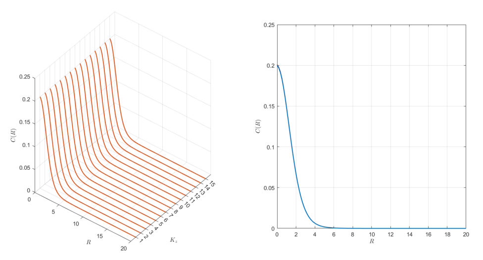
<figcaption class="paper-figure-caption"><b>Fig 1.</b> FIG. 1. On the left, radially symmetric SL profiles of ˜C(KZ, R, t) for ˜ N = 15; on the right is a plot showing the superposition of all KZ distributions.</figcaption>
</figure>
<figure class="paper-figure-card">
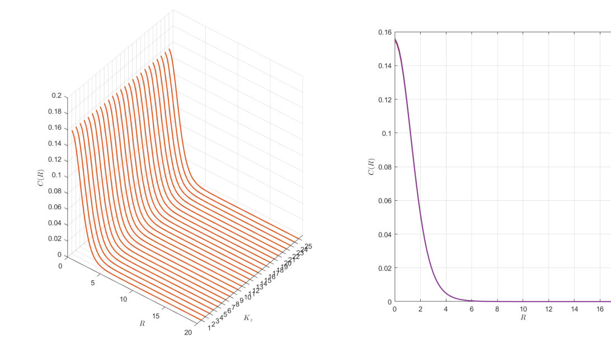
<figcaption class="paper-figure-caption"><b>Fig 2.</b> FIG. 2. On the left, radially symmetric superlattice profiles of ˜C(KZ, R, t) for ˜ N = 25. On the right is a plot showing the superposition of all KZ distributions.</figcaption>
</figure>
<figure class="paper-figure-card">
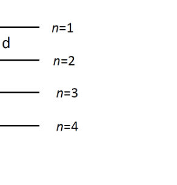
<figcaption class="paper-figure-caption"><b>Fig 3.</b> FIG. 3. Frenkel exciton model of SL with period d.</figcaption>
</figure>
<figure class="paper-figure-card">
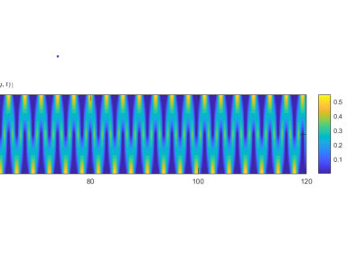
<figcaption class="paper-figure-caption"><b>Fig 4.</b> FIG. 4. A maximum value of C(nd, R, φ, t) as a function of time for J = 2000 cm−1and ˜ N = 3.</figcaption>
</figure>
<figure class="paper-figure-card">
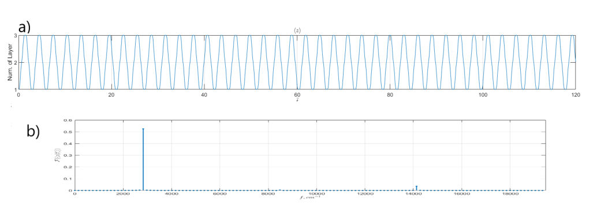
<figcaption class="paper-figure-caption"><b>Fig 5.</b> FIG. 5. Average coordinate ⟨Z(t)⟩as a function of time (a) and the spectrum of ⟨Z(t)⟩(b) for J = 2000 cm−1and ˜ N = 3.</figcaption>
</figure>
</div>

<p><strong>Summary.</strong> This theoretical study models superfluorescence in perovskite superlattices, showing that interlayer tunneling introduces a new degree of freedom via miniband formation. This coupling causes the fundamental soliton solution to evolve into a stable breather state, providing a measurable signature of the interlayer coupling strength.</p>
<p><strong>Why it may be interesting.</strong> This work directly connects solid-state physics (perovskites, superlattices) with nonlinear wave phenomena (solitons, breathers) in a quantum optical context, providing a mechanism (miniband formation) to generate complex, observable dynamics from simple structural periodicity.</p>
<details>
<summary>Detailed structure</summary>
<p><strong>Main problem.</strong> The study investigates the origin of stable macroscopic quantum coherence at room temperature in quasi-2D perovskites, specifically focusing on how interlayer coupling modifies superfluorescence dynamics.</p>
<p><strong>Main result.</strong> Interlayer tunneling induces miniband formation, which causes the fundamental soliton to exhibit breather dynamics—a coherent temporal redistribution of the exciton amplitude among the layers. This breather behavior is absent when tunneling is removed.</p>
<p><strong>Method.</strong> The analysis extends the 2D nonlinear Schrödinger equation to a 3D nonlocal form for superlattices, using approximations like the adiabatic limit and Fourier transforms in momentum space.</p>
<p><strong>Model / system.</strong> The system models Wannier exciton–LO phonon interactions in quasi-2D metal-halide perovskite superlattices. The dynamics are governed by a 3D nonlocal nonlinear Schrödinger equation derived from the exciton-phonon Hamiltonian.</p>
<p><strong>Key observables.</strong> Breather dynamics (temporal oscillations of exciton amplitude), the fundamental soliton profile, and the resulting miniband dispersion.</p>
<p><strong>Important parameters / regimes.</strong> Interlayer coupling strength ($J$), number of layers ($    ilde{N}$), and the in-plane momentum ($q$).</p>
<p><strong>Assumptions / limitations.</strong> The derivation relies on the adiabatic approximation, the single-exciton wavefunction approximation, and assuming the ground-state population remains near unity.</p>
<p><strong>Figures summary.</strong> Figures illustrate the radial profiles of the exciton amplitude $  ilde{C}(K_Z, R, t)$ for various layer numbers and show time evolution plots of the maximum amplitude and average coordinate $\langle Z(t) 
angle$ under varying tunneling strengths ($J$).</p>
<p><strong>Paper structure.</strong> The paper builds from the initial 2D description to a 3D nonlocal NLS equation for superlattices. It then analyzes the role of interlayer tunneling, showing how miniband formation introduces a phase modulation that manifests as coherent breather dynamics, contrasting this with the stationary soliton found when tunneling is zero.</p>
</details>
<details>
<summary>Abstract</summary>
<p>Recently, a soliton mechanism for room-temperature superfluorescence in thin perovskite films has been proposed, with a fundamental soliton predicted to remain stable under LO phonon--exciton interactions. At the same time, superlattice architectures offer a route to enhancing superfluorescence in perovskites. Motivated by recent observations of room-temperature superfluorescence in periodic superlattices of quasi-2D metal-halide perovskites, we extend the 2D nonlocal nonlinear Schrödinger equation describing Wannier exciton--LO phonon interactions to superlattice structures, obtaining a 3D nonlocal nonlinear Schrödinger equation. We show that interlayer tunnelling gives rise to breather dynamics corresponding to a stable fundamental soliton in mixed coordinate--momentum space, with the coordinate parallel to the layers and the momentum perpendicular to them. The breather dynamics originate from miniband formation, which induces a momentum-dependent phase modulation of the soliton. In the absence of interlayer tunnelling, the breather dynamics disappear and the soliton becomes stationary. These results establish a direct connection between interlayer tunnelling, miniband formation and soliton dynamics, suggesting that breather behavior can provide a signature of interlayer tunnelling in quasi-2D perovskite superlattices.</p>
</details>
<p><sub><a href="#top">↑ back to top</a></sub></p>

<p><a id="paper-2609.08455"></a></p>
<h3 id="magic-free-coexisting-photonic-and-phononic-moire-flat-bands"><a href="http://arxiv.org/abs/2609.08455v1">Magic-free coexisting photonic and phononic moiré flat bands</a></h3>
<p><strong>Authors:</strong> Ziming Chen, Kaiyu Cui, Ning Wu, Shuyuan Li, Chenxuan Wang, Xue Feng, Fang Liu, Wei Zhang, Hao Sun, Yongzhuo Li, Yidong Huang<br>
<strong>Type:</strong> both · <strong>Category:</strong> other · <strong>PDF:</strong> <a href="https://arxiv.org/pdf/2609.08455v1">https://arxiv.org/pdf/2609.08455v1</a><br>
<strong>Analysis basis:</strong> full PDF text, analyzed in chunks
<strong>Topic relevance:</strong> <code>analog quantum simulation</code> <strong>3/5</strong> · <code>Tavis-Cummings &amp; cavity-many-emitter</code> <strong>2/5</strong> · <code>driven-dissipative phase transition</code> <strong>2/5</strong> · <code>interference shaping light</code> <strong>2/5</strong> · <code>methods for driven-dissipative</code> <strong>2/5</strong> · <code>Keldysh / 2PI / non-Gaussian methods</code> <strong>1/5</strong> · <code>correlated / nonlocal dissipation</code> <strong>1/5</strong></p>
<div class="figure-strip-hint">↔ Scroll figures horizontally</div>
<div class="paper-figures-scroll">
<figure class="paper-figure-card">
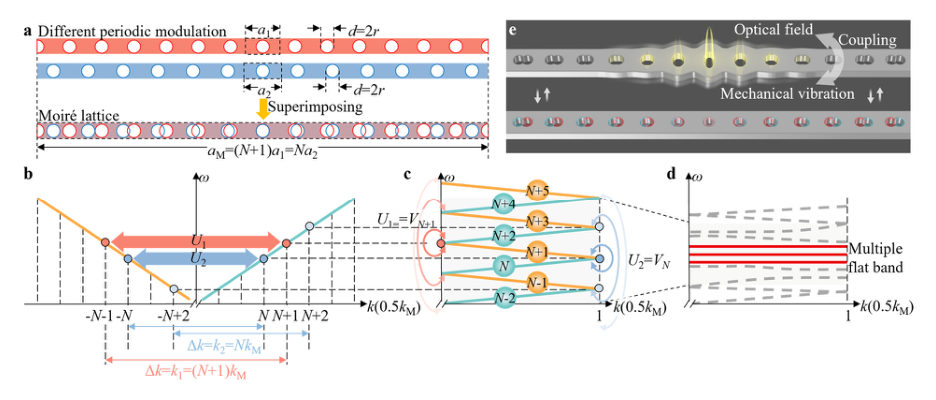
<figcaption class="paper-figure-caption"><b>Fig 1.</b> Fig. 1. Formation of moiré lattice and occurrence of flat band in a moiré optomechanical crystal. a.</figcaption>
</figure>
<figure class="paper-figure-card">
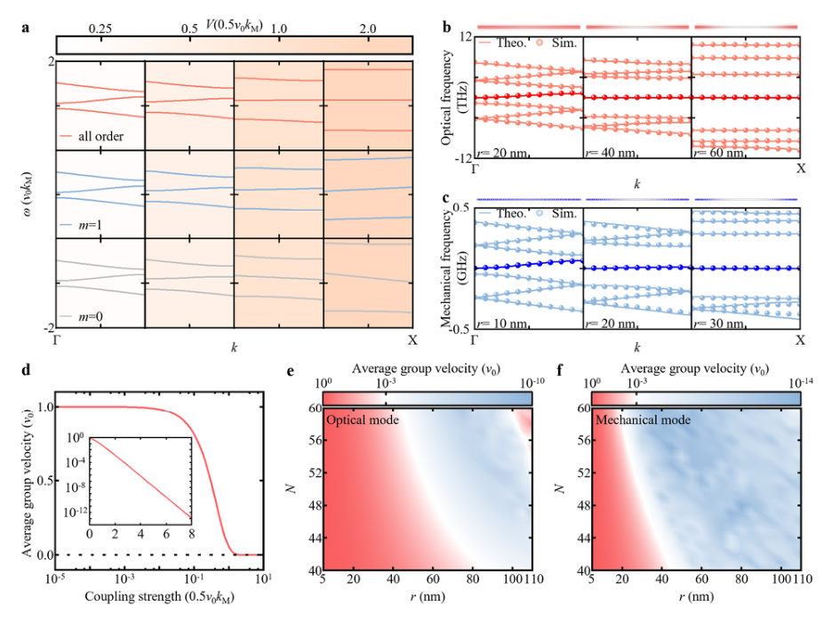
<figcaption class="paper-figure-caption"><b>Fig 2.</b> Fig. 2. Effective Hamiltonian model for band calculation and comparison with simulation. a. Comparison</figcaption>
</figure>
<figure class="paper-figure-card">
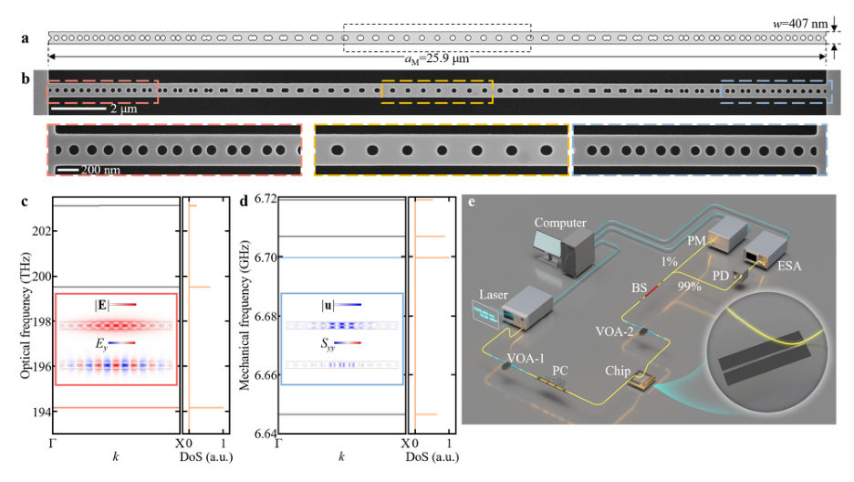
<figcaption class="paper-figure-caption"><b>Fig 3.</b> Fig. 3. The designed moiré optomechanical crystal and experimental setup. a. The moiré optomechanical</figcaption>
</figure>
<figure class="paper-figure-card">
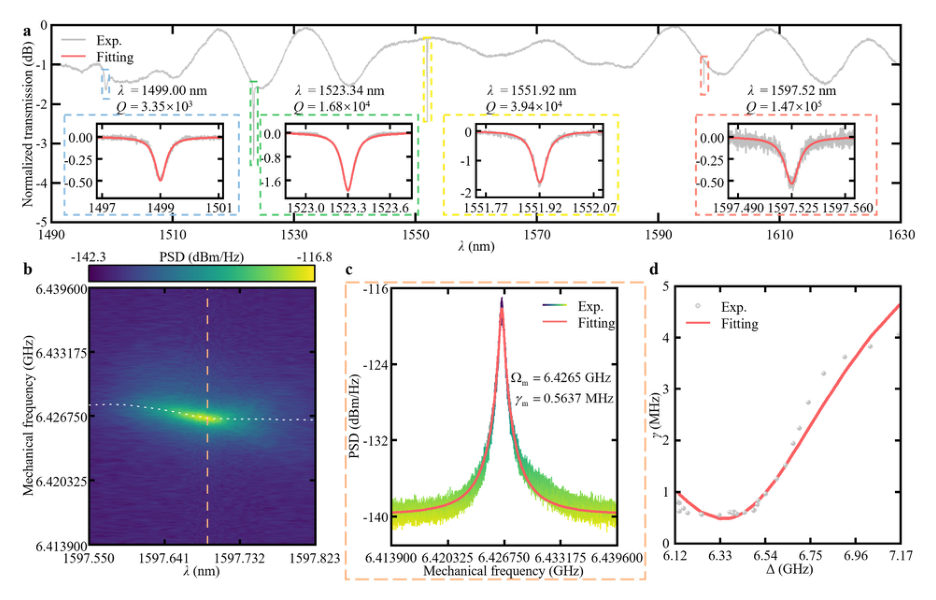
<figcaption class="paper-figure-caption"><b>Fig 4.</b> Fig. 4. Characterization of the optical and mechanical modes. a. Measured optical transmission from 1490</figcaption>
</figure>
</div>

<p><strong>Summary.</strong> This paper introduces a novel, general mechanism to create flat bands in moiré systems by exploiting strong diffractive hybridization between multiple physical fields. By modeling a single-layer optomechanical crystal, the authors show that increasing coupling monotonically suppresses the group velocity, allowing for the simultaneous, magic-configuration-free localization and coupling of both photonic and phononic modes.</p>
<p><strong>Why it may be interesting.</strong> This work provides a general, tunable mechanism for engineering flat bands in coupled systems (optomechanics) without relying on the highly specific 'magic angle' tuning, which is a major theme in AMO and quantum optics.</p>
<details>
<summary>Detailed structure</summary>
<p><strong>Main problem.</strong> Existing moiré flat-band approaches are limited to targeting only a single physical field and require specific, finely tuned 'magic configurations' for each field.</p>
<p><strong>Main result.</strong> The authors demonstrate a general, field-independent mechanism for achieving flat bands by utilizing strong diffractive hybridization among moiré-folded bands, enabling simultaneous localization and coupling of distinct fields like photons and phonons.</p>
<p><strong>Method.</strong> The study combines theoretical modeling using an effective Hamiltonian derived from diffractive coupling terms with numerical simulations (FEM) and experimental measurements (PSD fitting).</p>
<p><strong>Model / system.</strong> The system is a single-layer moiré optomechanical crystal formed by superimposing two periodic modulations with mismatched periods. The physics is governed by an effective Hamiltonian incorporating free and total diffraction coupling terms.</p>
<p><strong>Key observables.</strong> Near-zero group velocity, band splitting, average group velocity vs. coupling strength, intrinsic mechanical frequency, and optomechanical coupling rate.</p>
<p><strong>Important parameters / regimes.</strong> Diffractive coupling strength (V), moiré lattice period, and the condition for flat bands ($V\omega/\Delta \gtrsim 1$).</p>
<p><strong>Assumptions / limitations.</strong> The mechanism relies on diffractive hybridization on a single layer, contrasting with multilayer systems that require fine-tuning magic configurations.</p>
<p><strong>Figures summary.</strong> Figures illustrate the moiré lattice formation, the coupling between forward/backward modes, the resulting multiple flat bands, and the monotonic suppression of the average group velocity as coupling increases.</p>
<p><strong>Paper structure.</strong> The paper progresses from identifying the limitation of single-field magic configurations to developing an effective Hamiltonian based on diffractive coupling. It then analyzes the resulting band structure and group velocity trend, culminating in experimental demonstration of simultaneous photonic and phononic flat bands.</p>
</details>
<details>
<summary>Abstract</summary>
<p>Moiré flat bands enhance localization and interactions through suppressed group velocity, but existing approaches largely target a single physical field because distinct excitations generally require different, finely tuned magic configurations. Here we introduce a flat-band mechanism based on strong diffractive hybridization among moiré-folded bands. Period-mismatched modulations open distinct coupling channels whose hybridization renormalizes the band dispersion. An effective Hamiltonian shows that increasing the diffractive coupling progressively suppresses the group velocity, driving the system toward a flat-band regime without field-specific magic configurations. This coupling-induced mechanism enables band flattening across distinct physical excitations. We demonstrate this mechanism in a single-layer moiré optomechanical crystal, where photonic and phononic flat bands are simultaneously realized, and their localized modes and optomechanical interaction are experimentally observed. Beyond photonic and phononic systems, this mechanism may extend to other wave and quasiparticle platforms, providing a general route to co-localizing and coupling distinct physical fields in moiré systems.</p>
</details>
<p><sub><a href="#top">↑ back to top</a></sub></p>

<p><a id="paper-2609.08344"></a></p>
<h3 id="thresholdless-corner-vortex-solitons-in-fractal-sierpinski-topological-insulators"><a href="http://arxiv.org/abs/2609.08344v1">Thresholdless corner vortex solitons in fractal Sierpiński topological insulators</a></h3>
<p><strong>Authors:</strong> Yiqi Zhang, Alexander V. Kireev, Victor O. Kompanets, Sergey Y. Alyatkin, Nikita S. Kostyuchenko, Sergei A. Zhuravitskii, Nikolay N. Skryabin, Khalil Sabour, Alexander A. Kalinkin, Yongdong Li, Sergei P. Kulik, Pavlos G. Lagoudakis, Sergey V. Chekalin, Yaroslav V. Kartashov, Victor N. Zadkov<br>
<strong>Type:</strong> experiment · <strong>Category:</strong> other · <strong>PDF:</strong> <a href="https://arxiv.org/pdf/2609.08344v1">https://arxiv.org/pdf/2609.08344v1</a><br>
<strong>Analysis basis:</strong> full PDF text, analyzed in chunks
<strong>Topic relevance:</strong> <code>analog quantum simulation</code> <strong>3/5</strong> · <code>quantum optics experiment</code> <strong>3/5</strong> · <code>interference shaping light</code> <strong>2/5</strong> · <code>driven-dissipative phase transition</code> <strong>1/5</strong> · <code>methods for driven-dissipative</code> <strong>1/5</strong></p>
<div class="figure-strip-hint">↔ Scroll figures horizontally</div>
<div class="paper-figures-scroll">
<figure class="paper-figure-card">
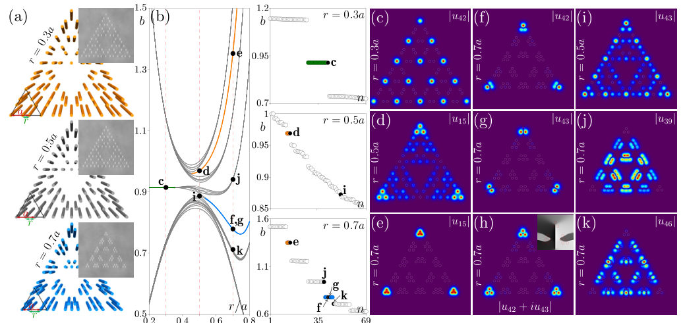
<figcaption class="paper-figure-caption"><b>Fig 1.</b> FIG. 1. Lattices, spectra, and modes. (a) Sketches of the fractal G3 waveguide arrays with different distortion parameters r. Triangles indicate G1 elements. The insets show microphotographs of corresponding fs-laser written arrays. (b) Linear spectrum of G3 fractal array as a function of r and eigenvalues b vs mode index n corresponding to three vertical dashed lines in (b). Colored dots correspond to topological states, gray dots to delocalized states. Black dots with letters correspond to representative eigenmodes un, whose |un| distributions (with superimposed on them array contours) are depicted in panels (c-k). Among them are two degenerate corner states u42 (f) and u43 (g) that can...</figcaption>
</figure>
<figure class="paper-figure-card">
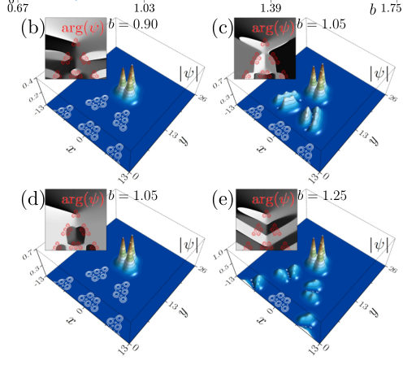
<figcaption class="paper-figure-caption"><b>Fig 2.</b> FIG. 2. Corner vortex soliton family. (a) Power U of corner vortex solitons in fractal array as a function of b at r = 0.7a. Solid (dashed) lines correspond to stable (unstable) solitons. Purple regions indicate bands of extended states, while gray lines show eigenvalues of linear corner states. (b)-(e) Field modulus and phase (insets) distributions in solitons corre- sponding to the dots with letters in (a).</figcaption>
</figure>
<figure class="paper-figure-card">
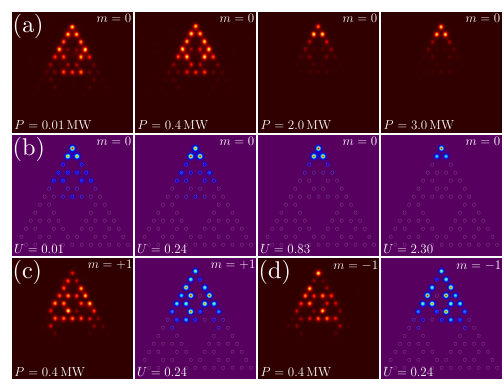
<figcaption class="paper-figure-caption"><b>Fig 3.</b> FIG. 3. Experimental excitations in topological trivial lattice. (a) Output experimental intensity distributions (panels with maroon background) for trivial-phase excitation (m = 0) of three corner waveguides in fractal array with r = 0.5a at dif- ferent input peak powers P compared with (b) theoretical out- put distributions (panels with purple background). (c) and (d) show comparison of the experimental and theoretical output intensity distributions for vortex-carrying excitation of three corner waveguides with m = +1 (c) and m = −1 (d).</figcaption>
</figure>
<figure class="paper-figure-card">
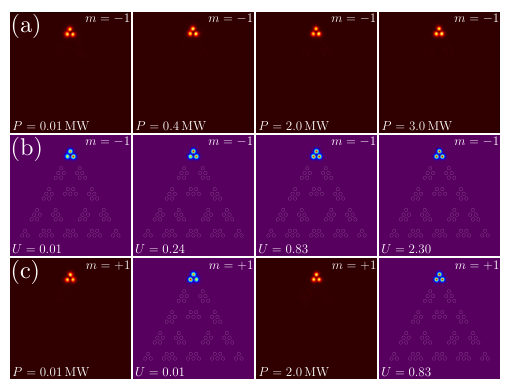
<figcaption class="paper-figure-caption"><b>Fig 4.</b> FIG. 4. Experimental excitation of corner vortex solitons. Comparison of experimental (a) and theoretical (b) output in- tensity distributions for vortex-carrying excitation (m = −1) of three corner waveguides in array with r = 0.7a at different peak powers. (c) The same for m = +1 excitation.</figcaption>
</figure>
<figure class="paper-figure-card">
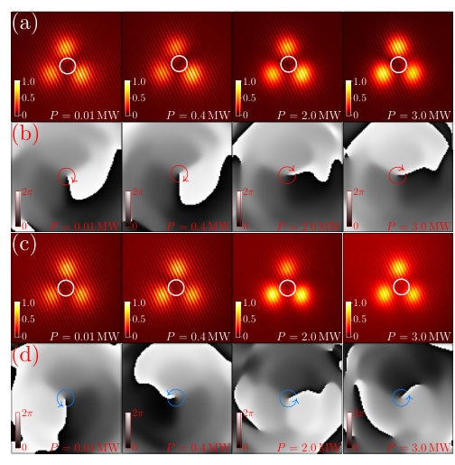
<figcaption class="paper-figure-caption"><b>Fig 5.</b> FIG. 5. Experimentally measured phase distribution of the excited corner vortex soliton. (a,c) Experimentally measured single-shot interference patterns and corresponding retrieved phase distributions (b,d). Measured phases confirm the forma- tion of corner vortex solitons with topological charge m = −1 (a,b) and m = +1 (c,d) at different peak powers P. White cir- cles schematically denote the position of the phase singularity.</figcaption>
</figure>
</div>

<p><strong>Summary.</strong> This paper reports the first experimental observation of stable topological corner vortex solitons within a photonic fractal Higher-Order Topological Insulator. By using a Sierpiński gasket waveguide array, the researchers demonstrated that these solitons form without a power threshold, confirming the introduction of angular momentum into the physics of topological corner modes.</p>
<p><strong>Why it may be interesting.</strong> This work bridges topological physics, nonlinear optics, and photonics, providing a concrete platform (photonic lattices) to study complex nonlinear wave phenomena like vortex solitons, which is highly relevant to quantum optics and open quantum systems research.</p>
<details>
<summary>Detailed structure</summary>
<p><strong>Main problem.</strong> The primary challenge addressed is realizing and studying stable topological corner vortex solitons in photonic fractal Higher-Order Topological Insulators (HOTIs), overcoming the limitation that previous corner solitons only exhibited trivial phase distributions.</p>
<p><strong>Main result.</strong> The authors report the first experimental realization of stable, topological corner vortex solitons in a photonic fractal HOTI, demonstrating their thresholdless formation and exceptional robustness across a wide power range.</p>
<p><strong>Method.</strong> The study combines theoretical analysis (solving the nonlinear Schrödinger equation) with experimental implementation using laser-written waveguide arrays to excite and measure the light confinement and phase structure.</p>
<p><strong>Model / system.</strong> The system is a photonic fractal HOTI realized using an array of laser-written waveguides shaped like a Sierpiński gasket. The physics is governed by the nonlinear Schrödinger equation, and the topological properties are derived from the linear spectrum analysis.</p>
<p><strong>Key observables.</strong> Output intensity distributions, phase structure (vortex singularity), and the existence of stable solitons across a broad power range.</p>
<p><strong>Important parameters / regimes.</strong> The distortion parameter ($r$) of the fractal structure, the input power ($P$, tested from 0.01 MW to 3 MW), and the topological charge ($m=\pm 1$).</p>
<p><strong>Assumptions / limitations.</strong> The analysis assumes standard normalizations for power and relies on the ability to construct linear corner vortex modes from degenerate corner doublets.</p>
<p><strong>Figures summary.</strong> Figures show the Sierpiński gasket structure, the linear spectrum analysis (eigenvalues vs. mode index), the bifurcation of soliton families from linear states, and experimental measurements confirming the intensity confinement and phase singularity of the vortex solitons at various powers.</p>
<p><strong>Paper structure.</strong> The paper progresses from establishing the theoretical framework (linear spectrum analysis and soliton bifurcation) to presenting the experimental setup and results, culminating in the confirmation of thresholdless, topologically protected vortex states.</p>
</details>
<details>
<summary>Abstract</summary>
<p>Quantized vortices are ubiquitous in physics, spanning superconductivity, astrophysics, superfluid condensed matter systems, and nonlinear optics. Yet embedding vorticity into topologically protected nonlinear states has remained a major challenge, with all previously observed corner solitons in higher-order topological insulators (HOTIs) exhibiting only trivial phase distributions. Here, we report on the first realization of stable topological corner vortex solitons in a photonic fractal HOTI. Using an array of laser-written waveguides in the shape of Sierpiński gasket with a controllable distortion, we design linear topological vortex modes, from which nonlinear corner vortex solitons bifurcate. Moreover, we demonstrate that these solitons exhibit exceptional robustness across a broad power range and, unlike vortex solitons in topologically trivial lattices, form without a power threshold. Our results introduce the angular momentum degree of freedom into the physics of topological corner modes, opening prospects for topologically protected vortex-based photonics.</p>
</details>
<p><sub><a href="#top">↑ back to top</a></sub></p>

<p><a id="paper-2609.07934"></a></p>
<h3 id="spectro-temporal-shaping-of-broadband-optical-wavepackets-via-programmable-on-chip-photonics"><a href="http://arxiv.org/abs/2609.07934v1">Spectro-temporal shaping of broadband optical wavepackets via programmable on-chip photonics</a></h3>
<p><strong>Authors:</strong> Bruno P. Chaves, Jérémy Saucourt, Van Thuy Hoang, Alexis Bougaud, Yassin Boussafa, Erwan Ferrandon, Sai T. Chu, Brent E. Little, David J. Moss, Roberto Morandotti, Vincent Couderc, Benjamin Wetzel<br>
<strong>Type:</strong> experiment · <strong>Category:</strong> other · <strong>PDF:</strong> <a href="https://arxiv.org/pdf/2609.07934v1">https://arxiv.org/pdf/2609.07934v1</a><br>
<strong>Analysis basis:</strong> full PDF text, analyzed in chunks
<strong>Topic relevance:</strong> <code>interference shaping light</code> <strong>3/5</strong> · <code>quantum optics experiment</code> <strong>3/5</strong> · <code>QC/QI experiment</code> <strong>1/5</strong> · <code>analog quantum simulation</code> <strong>1/5</strong> · <code>quantum measurements</code> <strong>1/5</strong></p>
<div class="figure-strip-hint">↔ Scroll figures horizontally</div>
<div class="paper-figures-scroll">
<figure class="paper-figure-card">
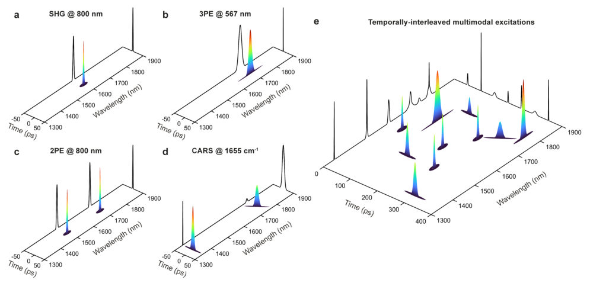
<figcaption class="paper-figure-caption"><b>Fig 1.</b> Figure 1 | Properties of spectro-temporally tailored wavepackets for multiphoton imaging. Examples of selected spectrograms in the near-infrared region typically required for exciting diverse multiphoton imaging modalities. a-d show several wavepackets with spectro-temporal properties desirable for relevant multiphoton excitations. Such illustrative spectrograms include single pulse targeting second-harmonic generation (SHG) at 800 nm (a) or three-photon excitation (3PE) at 567 nm (b), aiming to excite typical fluorescence markers (e.g. Texas Red). The spectral bandwidth and associated peak power are directly related to the number of photons involved in the multiphotonic process, to ensure...</figcaption>
</figure>
<figure class="paper-figure-card">
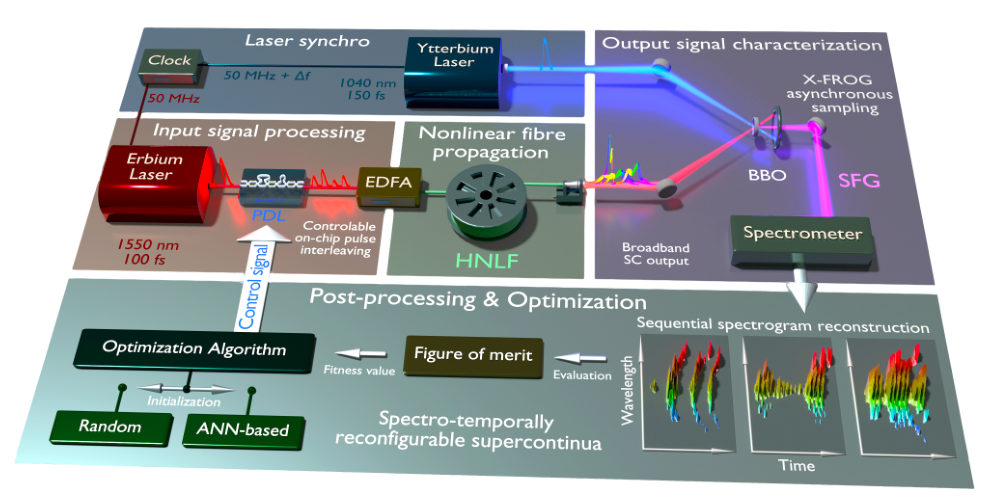
<figcaption class="paper-figure-caption"><b>Fig 2.</b> Figure 2 | Experimental setup for tailoring broadband and reconfigurable wavepackets. A signal processing stage first provides flexible control over a femtosecond input pulse train centred at 1550 nm through the use of an on-chip programmable delay line (PDL). The shaped pulse train is then amplified and launched into a highly nonlinear fibre (HNLF), where it undergoes nonlinear fibre propagation. The broadband wavepacket collected at the fibre output is a supercontinuum (SC) with controllable spectro-temporal properties. This broadband signal is then characterized via asynchronous nonlinear sampling, leveraging another synchronized ytterbium laser emitting at 1040 nm for producing...</figcaption>
</figure>
<figure class="paper-figure-card">
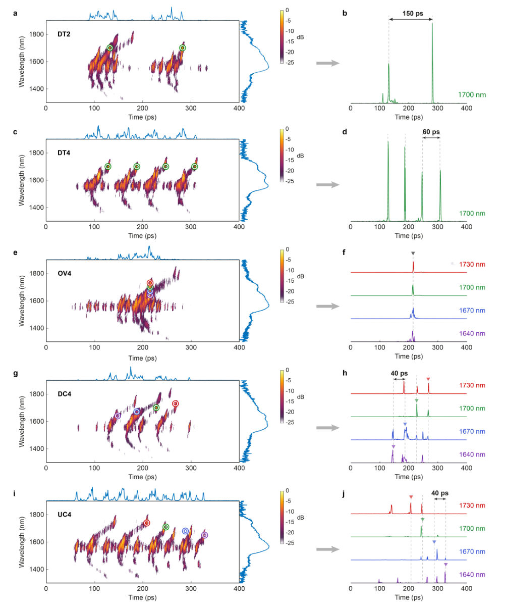
<figcaption class="paper-figure-caption"><b>Fig 3.</b> Figure 3 | Examples of tailored broadband wavepackets, obtained via evolutionary algorithm optimizations. Five different target spectro-temporal patterns are presented, to illustrate selected optimization of broadband wavepacket properties. Selective shaping and spectro-temporal power allocations are experimentally demonstrated, including the generation of selected number of pulses at desired wavelengths, as well as the control</figcaption>
</figure>
<figure class="paper-figure-card">
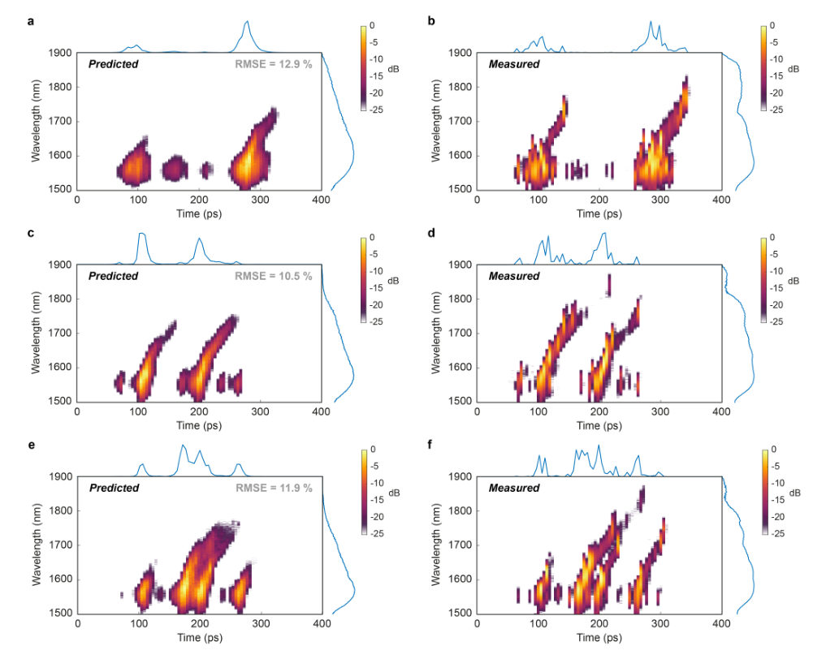
<figcaption class="paper-figure-caption"><b>Fig 4.</b> Figure 4 | Artificial neural network prediction of synthetic spectrograms. Synthetic spectrograms predicted from a trained artificial neural network (ANN) are compared with experimental X-FROGs (i.e. the ground truth data used for ANN training). The three examples illustrated are extracted from the ANN testing subset for different input pulse train configurations (left panels), and compared with the spectrograms measured experimentally (right panels). The spectrograms are shown on a logarithmic scale, with a 25 dB dynamic range, and an equivalent temporal resolution of 4.6 ps. The retrieved root-mean square error (RMSE), of typically few percent (12.2 % average RMSE in the testing subset),...</figcaption>
</figure>
<figure class="paper-figure-card">
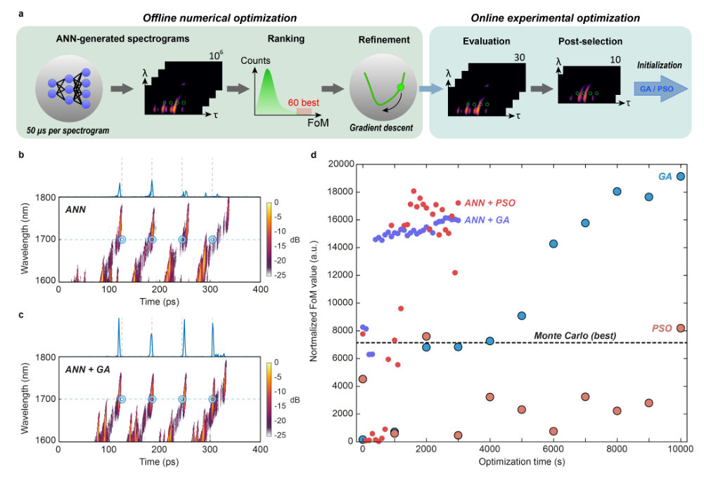
<figcaption class="paper-figure-caption"><b>Fig 5.</b> Figure 5 | ANN-informed strategies for wavepacket optimization. a. ANN-informed optimization workflow: once trained the ANN rapidly generates one million synthetic spectrograms. Each spectrogram is rated according to the FoM and the 60-best candidates are selected and further refined using fast numerical gradient descent optimization. The 30-best refined candidates are experimentally tested and the 10-best are selected as an optimized initial population for online optimization (via GA or PSO). b-d. Example of ANN-informed optimization of a selected target wavepacket pattern (DT4 – i.e. 4 pulses at 1700 nm, respectively delayed by 60 ps). b. Experimental spectrogram, measured from...</figcaption>
</figure>
</div>

<p><strong>Summary.</strong> This paper introduces a novel, scalable platform for precisely controlling the spectral and temporal properties of broadband optical pulses. By integrating programmable photonics with nonlinear fiber optics and employing machine learning optimization, the authors can generate tailored ultrafast wavepackets on demand. This breakthrough overcomes the limitations of bulky conventional systems, enabling next-generation applications in quantum optics and advanced imaging.</p>
<p><strong>Why it may be interesting.</strong> This work provides a highly controllable platform for generating complex light fields, which is fundamental for realizing advanced quantum light sources or performing complex nonlinear spectroscopy.</p>
<details>
<summary>Detailed structure</summary>
<p><strong>Main problem.</strong> The primary challenge is achieving flexible and adjustable spectro-temporal shaping of broadband optical wavepackets for advanced applications like quantum information processing and ultrafast spectroscopy.</p>
<p><strong>Main result.</strong> The authors demonstrated a scalable, on-demand method to tailor broadband ultrafast pulse patterns, achieving reconfigurable power control across a 400 nm bandwidth with picosecond resolution.</p>
<p><strong>Method.</strong> The technique merges programmable integrated photonics with nonlinear fiber propagation, using machine learning (ML) algorithms to iteratively optimize the input pulse to achieve a desired output spectro-temporal profile.</p>
<p><strong>Model / system.</strong> The system utilizes a programmable delay line (PDL) to condition the input pulse into a highly nonlinear fiber (HNLF) which generates a supercontinuum (SC). The output is characterized using advanced techniques like X-FROG.</p>
<p><strong>Key observables.</strong> Spectrograms showing spectral and temporal content, and a Figure of Merit (FoM) used to guide optimization towards target spectro-temporal patterns.</p>
<p><strong>Important parameters / regimes.</strong> 400 nm bandwidth, picosecond resolution, and the ability to control interpulse delays across hundreds of picoseconds.</p>
<p><strong>Assumptions / limitations.</strong> Conventional spectro-temporal processing methods are bulky and lack scalability, necessitating the integrated photonic approach.</p>
<p><strong>Figures summary.</strong> Figures illustrate the experimental setup involving the PDL, HNLF, and characterization stages, alongside examples of tailored spectro-temporal wavepackets (e.g., DT2, OV4) achieved through optimization.</p>
<p><strong>Paper structure.</strong> The paper presents a framework combining programmable integrated photonics with nonlinear fiber optics. The core methodology involves using machine learning to optimize the input pulse to sculpt the broadband supercontinuum output, which is then verified via high-speed optical characterization.</p>
</details>
<details>
<summary>Abstract</summary>
<p>The ability to precisely shape the properties of light over multiple degrees of freedom constitutes the foundation of modern photonic architectures. Broadband sources with addressable spectro-temporal content are for instance critical for applications spanning biomedical imaging, material processing, lidar, and ultrafast spectroscopy, but also key enabling technologies in quantum information processing, high-capacity communications, and optical computing. Yet, flexible and adjustable spectro-temporal shaping so far remains a significant challenge, as it requires the simultaneous manipulation of both frequency and temporal domains across broad spectral bandwidths and extended timescales, from femtoseconds to nanoseconds. Importantly, conventional approaches to spectro-temporal processing typically rely on bulky and complex optical systems that lack scalability and flexibility, ultimately hampering their utility for applications requiring addressable multiphotonic processes. Here, we present a framework for spectro-temporal wavepacket control over a broad bandwidth, merging programmable integrated photonics with high-speed optical characterization. Leveraging machine leaning for tailoring nonlinear pulse propagation, we experimentally report scalable and on-demand shaping of broadband ultrafast pulse patterns. We demonstrate the efficacy of our method through reconfigurable power across 400 nm bandwidth with picosecond resolution, with promises for applications where precise control over light is paramount, in particular those needing versatile and controllable multiphoton excitations.</p>
</details>
<p><sub><a href="#top">↑ back to top</a></sub></p>

<p><a id="paper-2609.08063"></a></p>
<h3 id="edge-energy-fluctuation-a-unified-theory-of-friction-scaling-laws-in-twisted-layered-material-interfaces"><a href="http://arxiv.org/abs/2609.08063v1">Edge energy fluctuation: A unified theory of friction scaling laws in twisted layered material interfaces</a></h3>
<p><strong>Authors:</strong> Ze Liu<br>
<strong>Type:</strong> theory · <strong>Category:</strong> other · <strong>PDF:</strong> <a href="https://arxiv.org/pdf/2609.08063v1">https://arxiv.org/pdf/2609.08063v1</a><br>
<strong>Analysis basis:</strong> full PDF text, analyzed in chunks
<strong>Topic relevance:</strong> <code>Frenkel-Kontorova</code> <strong>3/5</strong> · <code>analog quantum simulation</code> <strong>2/5</strong> · <code>correlated / nonlocal dissipation</code> <strong>1/5</strong> · <code>driven-dissipative phase transition</code> <strong>1/5</strong> · <code>non-equilibrium universality</code> <strong>1/5</strong></p>
<div class="figure-strip-hint">↔ Scroll figures horizontally</div>
<div class="paper-figures-scroll">
<figure class="paper-figure-card">
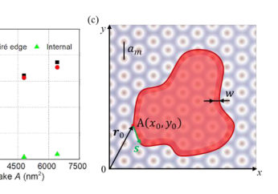
<figcaption class="paper-figure-caption"><b>Fig 1.</b> Fig. 1. Definition of edge energy. (a) Illustration of the moiré edge, referring to the incomplete</figcaption>
</figure>
<figure class="paper-figure-card">
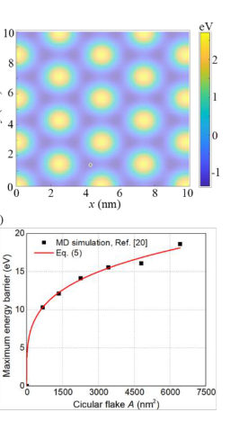
<figcaption class="paper-figure-caption"><b>Fig 2.</b> Fig. 2. (a)-(c) Sliding potential energy of a circular graphene slider atop an infinite graphene</figcaption>
</figure>
<figure class="paper-figure-card">
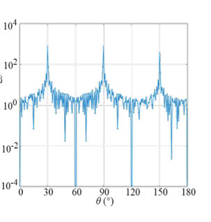
<figcaption class="paper-figure-caption"><b>Fig 3.</b> Fig. 3. Friction anisotropy caused by slider edge orientation. (a) Schematic of a slider starting</figcaption>
</figure>
<figure class="paper-figure-card">
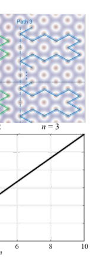
<figcaption class="paper-figure-caption"><b>Fig 4.</b> Fig. 4. Friction engineering by introducing hierarchical coherent edges. (a) Sketches of a</figcaption>
</figure>
</div>

<p><strong>Summary.</strong> This work introduces the Edge Energy Fluctuation (EEF) theory to model friction in twisted vdW materials. It shows that the friction barrier is dictated by the specific geometry and orientation of the slider edge, leading to predictable friction anisotropy. This provides a powerful, tunable paradigm for designing superlubric devices.</p>
<p><strong>Why it may be interesting.</strong> While focused on condensed matter friction, the concept of energy barriers governed by boundary conditions and symmetry breaking in quasi-periodic systems has parallels with understanding dissipation or decoherence in open quantum systems.</p>
<details>
<summary>Detailed structure</summary>
<p><strong>Main problem.</strong> The paper develops a unified theory to explain the friction scaling laws observed at the interfaces of twisted van der Waals (vdW) layered materials, moving beyond assumptions of periodic boundary conditions.</p>
<p><strong>Main result.</strong> The friction is governed by the Edge Energy Fluctuation (EEF), which reveals a strong dependence on the edge's orientation, leading to predictable friction anisotropy and offering a method for friction engineering.</p>
<p><strong>Method.</strong> The authors derive the sliding energy barrier by calculating an edge integral expression involving the moiré potential, analyzing how the edge geometry dictates the energy landscape.</p>
<p><strong>Model / system.</strong> The system is twisted vdW layered materials forming moiré superlattices, where the sliding motion is modeled by considering the energy contribution from the incomplete moiré tiles at the slider edge.</p>
<p><strong>Key observables.</strong> Friction scaling laws ($F \propto A^m$), the sliding energy barrier ($\Delta G$ or $\Delta E$), and the degree of friction anisotropy based on edge orientation ($    heta$).</p>
<p><strong>Important parameters / regimes.</strong> Twist angle, slider size (A or R), and the edge orientation ($  heta$) relative to the moiré lattice vectors.</p>
<p><strong>Assumptions / limitations.</strong> The energy barrier is dominated by the moiré edge, and the edge region can be approximated as a belt of finite width ($w$).</p>
<p><strong>Figures summary.</strong> Figures illustrate the moiré edge and define the edge energy (EEF); one figure shows the potential energy landscape for circular sliders, and another demonstrates the friction anisotropy dependence on edge orientation.</p>
<p><strong>Paper structure.</strong> The paper builds from defining the EEF concept, deriving the general edge energy integral, applying this to specific slider shapes (circular, straight), and finally establishing the implications for friction anisotropy and hierarchical edge engineering.</p>
</details>
<details>
<summary>Abstract</summary>
<p>Interlayer twisting in van der Waals (vdW) layered materials generates moire superlattices, unlocking unique opportunities for engineering their electronic and mechanical functionalities. Here, building on two key insights - the invariance of the potential energy of complete moire tiles during sliding, and the symmetry-breaking effect induced by the slider edge - we propose the concept of edge energy fluctuation (EEF) and demonstrate that the EEF governs the sliding energy barrier of finite-sized sliders. Interestingly, we found that even at a fixed twist angle and sliding direction, significant frictional anisotropy emerges when the slider edge is cut along different directions, resulting in distinct friction scaling laws. Furthermore, we present a friction engineering paradigm for twisted layered material interfaces through the deliberate introduction of hierarchical edges, offering a promising route for friction control in superlubric devices.</p>
</details>
<p><sub><a href="#top">↑ back to top</a></sub></p>

<p><a id="paper-2609.08237"></a></p>
<h3 id="magnetochiral-anisotropy-of-thermally-activated-phase-slips-in-noncentrosymmetric-superconductors"><a href="http://arxiv.org/abs/2609.08237v1">Magnetochiral anisotropy of thermally activated phase slips in noncentrosymmetric superconductors</a></h3>
<p><strong>Authors:</strong> Alex Levchenko<br>
<strong>Type:</strong> theory · <strong>Category:</strong> statistical mechanics · <strong>PDF:</strong> <a href="https://arxiv.org/pdf/2609.08237v1">https://arxiv.org/pdf/2609.08237v1</a><br>
<strong>Analysis basis:</strong> full PDF text, analyzed in chunks
<strong>Topic relevance:</strong> <code>Keldysh / 2PI / non-Gaussian methods</code> <strong>3/5</strong> · <code>correlated / nonlocal dissipation</code> <strong>1/5</strong> · <code>driven-dissipative phase transition</code> <strong>1/5</strong> · <code>methods for driven-dissipative</code> <strong>1/5</strong> · <code>non-equilibrium universality</code> <strong>1/5</strong></p>
<div class="figure-strip-hint">↔ Scroll figures horizontally</div>
<div class="paper-figures-scroll">
<figure class="paper-figure-card">
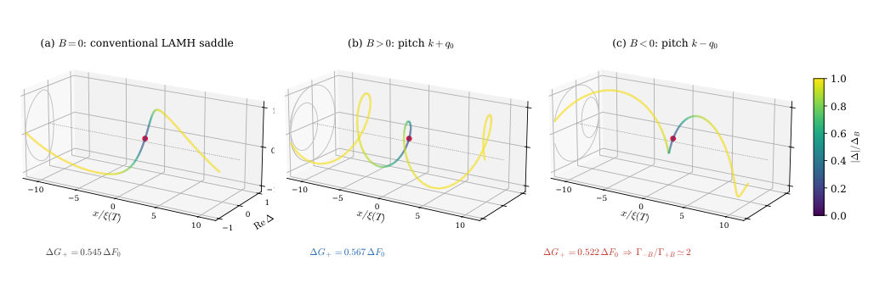
<figcaption class="paper-figure-caption"><b>Fig 1.</b> FIG. 1. Phase-slip saddle point of the noncentrosymmetric wire, plotted from the closed-form solution, Eqs. (17) and (18): the trajectory of ∆(x) along the wire (color encodes |∆|/∆B; gray curve shows the projection onto the complex-∆plane; the red dot marks the slip core at x = 0, where |∆|min = √</figcaption>
</figure>
<figure class="paper-figure-card">
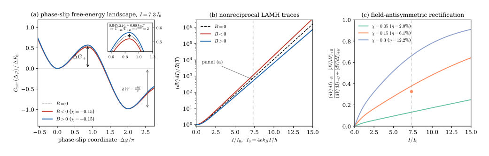
<figcaption class="paper-figure-caption"><b>Fig 2.</b> FIG. 2. Mechanism and observable of the nonreciprocal phase-slip magnetoresistance, with all panels sharing the parameter set of Fig. 1: k = 0.15, χ = ±0.15 (diode efficiency |η| = χ/ √</figcaption>
</figure>
</div>

<p><strong>Summary.</strong> This theoretical work models thermally activated phase slips in noncentrosymmetric superconducting wires, demonstrating that the resulting resistance exhibits magnetochiral anisotropy. This nonreciprocity stems from an asymmetry in the phase-slip barrier, which is directly linked to the superconducting diode effect. The analysis provides a parameter-free relationship between these two distinct non-equilibrium transport signatures.</p>
<p><strong>Why it may be interesting.</strong> The connection between non-equilibrium transport phenomena (phase slips) and fundamental symmetries (magnetochirality) in superconducting systems provides insights into how microscopic spin-orbit coupling manifests in macroscopic transport measurements, relevant to open quantum systems dynamics.</p>
<details>
<summary>Detailed structure</summary>
<p><strong>Main problem.</strong> The paper develops a theory for thermally activated phase slips (TAPS) in superconducting wires lacking inversion symmetry, aiming to explain the resulting magnetochiral anisotropy.</p>
<p><strong>Main result.</strong> The phase-slip resistance exhibits magnetochiral anisotropy, which arises from an asymmetry in the phase-slip activation barrier that is odd in both current and field. This anisotropy is exponentially amplified relative to the superconducting diode effect asymmetry.</p>
<p><strong>Method.</strong> The analysis uses a generalized Ginzburg-Landau functional derived from the Keldysh nonlinear sigma model to analyze the phase-slip saddle point.</p>
<p><strong>Model / system.</strong> The system is a diffusive superconducting wire patterned from a two-dimensional electron gas, incorporating Rashba spin-orbit coupling and an in-plane magnetic field. The theory analyzes the free energy functional containing standard terms and several odd-order Lifshitz invariants.</p>
<p><strong>Key observables.</strong> Magnetochiral anisotropy (MCA) in phase-slip resistance, superconducting diode effect (SDE) efficiency ($\eta$), and the field-antisymmetric splitting of differential-resistance slopes.</p>
<p><strong>Important parameters / regimes.</strong> Rashba coupling ($\alpha_R$), in-plane magnetic field ($h$), temperature ($T$), and the ratio of barrier height to temperature.</p>
<p><strong>Assumptions / limitations.</strong> The wire is assumed to be thin compared to the coherence length and penetration depth, and the kinetic Lifshitz invariant is shown to be parametrically subleading in the exponent asymmetry.</p>
<p><strong>Figures summary.</strong> Figure 1 illustrates the phase-slip saddle point trajectory in the complex plane for different magnetic field signs, showing the core riding on the helical ground state.</p>
<p><strong>Paper structure.</strong> The paper builds the theory using the GL functional, analyzes the phase-slip saddle point, derives the relationship between the MCA and the SDE via the barrier asymmetry, and confirms the independence of the result from ordering ambiguities in the appendices.</p>
</details>
<details>
<summary>Abstract</summary>
<p>Resistive tails of narrow superconducting wires below the critical temperature are governed by phase slips, thermally activated near the transition and quantum at lower temperatures. We develop the theory of thermally activated phase slips in wires lacking inversion symmetry, modeled microscopically as a diffusive wire formed from a two-dimensional electron gas with Rashba spin-orbit coupling in an in-plane magnetic field. The phase-slip resistance acquires magnetochiral anisotropy: at fixed current it changes upon reversal of the field, and at fixed field upon reversal of the current, while the linear-response resistance remains field symmetric as required by Onsager reciprocity. The nonreciprocity originates from an asymmetry of the phase-slip activation barrier that is odd in both current and field. It is generated by the Lifshitz invariants of the free energy, the cubic gradient term and the momentum-odd quartic vertex, together with even gradient terms promoted to odd ones by the helical ground state, precisely the combination that determines the superconducting diode effect. The barrier asymmetry is therefore fixed by the diode efficiency of the same wire through a universal numerical ratio, with no adjustable parameters. The kinetic Lifshitz invariant, which makes relaxation and noise of the order parameter nonreciprocal, affects only the fluctuation prefactor at a parametrically subleading level. Because the asymmetry resides in the activation exponent, the magnetochiral signal is amplified relative to the diode asymmetry by the ratio of barrier height to temperature, and appears as a field-antisymmetric splitting of the exponential slopes of differential-resistance traces routinely used to identify thermally activated phase slips.</p>
</details>
<p><sub><a href="#top">↑ back to top</a></sub></p>

<p><a id="paper-2609.08691"></a></p>
<h3 id="quantized-transport-of-two-dimensional-multifrequency-solitons"><a href="http://arxiv.org/abs/2609.08691v1">Quantized transport of two-dimensional multifrequency solitons</a></h3>
<p><strong>Authors:</strong> Fangwei Ye, Yaroslav V. Kartashov, Vladimir V. Konotop<br>
<strong>Type:</strong> theory · <strong>Category:</strong> other · <strong>PDF:</strong> <a href="https://arxiv.org/pdf/2609.08691v1">https://arxiv.org/pdf/2609.08691v1</a><br>
<strong>Analysis basis:</strong> full PDF text, analyzed in chunks
<strong>Topic relevance:</strong> <code>Frenkel-Kontorova</code> <strong>3/5</strong> · <code>Keldysh / 2PI / non-Gaussian methods</code> <strong>1/5</strong> · <code>analog quantum simulation</code> <strong>1/5</strong></p>
<div class="figure-strip-hint">↔ Scroll figures horizontally</div>
<div class="paper-figures-scroll">
<figure class="paper-figure-card">
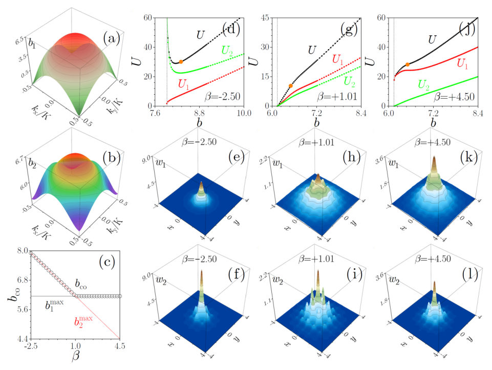
<figcaption class="paper-figure-caption"><b>Fig 1.</b> Fig 1 Linear spectrum of the lattice and families of lattice solitons. Top band of static lattice for FF wave (a) and SH wave (b) at β = 0. (c) Cutoff bco for 2D lattice solitons from semi-infinite gap versus phase mismatch β. The dependencies bmax 1,2 (β) illustrate upper edges of the spectra of H1,2. Total power and powers in FF and SH components versus propagation constant b at β = −2.50 &lt; βcr (d), β = +1.01 ≈βcr (g), and β = +4.50 &gt; βcr (j). Panels (e),(f) show profiles of soliton components corresponding to orange dot in (d), panels (h),(i) show profiles corresponding to orange dot in (g), while panels (k),(l) show profile corresponding to the orange dot in (j). Here and in all figures...</figcaption>
</figure>
<figure class="paper-figure-card">
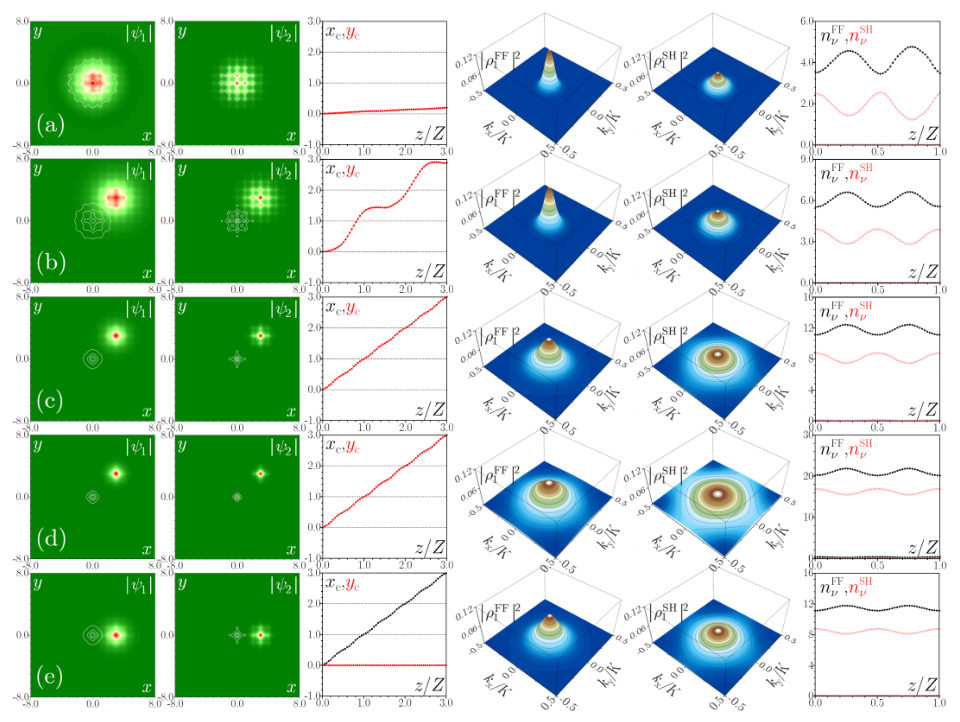
<figcaption class="paper-figure-caption"><b>Fig 2.</b> Fig 2 Dynamics of topological pumping of 2D quadratic solitons and the role of band filling. Diagonal pumping of two-dimensional quadratic solitons with propagation constants b = 6.35 (a), 6.47 (b), 7.00 (c), 8.00 (d) at αx = αy = 0.01. First and second columns show input (z = 0, white contour) and output (z = 3Z , red-green color map) modulus distributions of the FF and SH components. Third column shows x−and y−coordinates of soliton center of mass vs propagation distance on three pumping cycles. Fourth and fifth columns show, respectively, projections of the FF and SH components of soliton on the first band of dynamical optical lattice at z = 0. Sixth column shows total populations of the...</figcaption>
</figure>
<figure class="paper-figure-card">
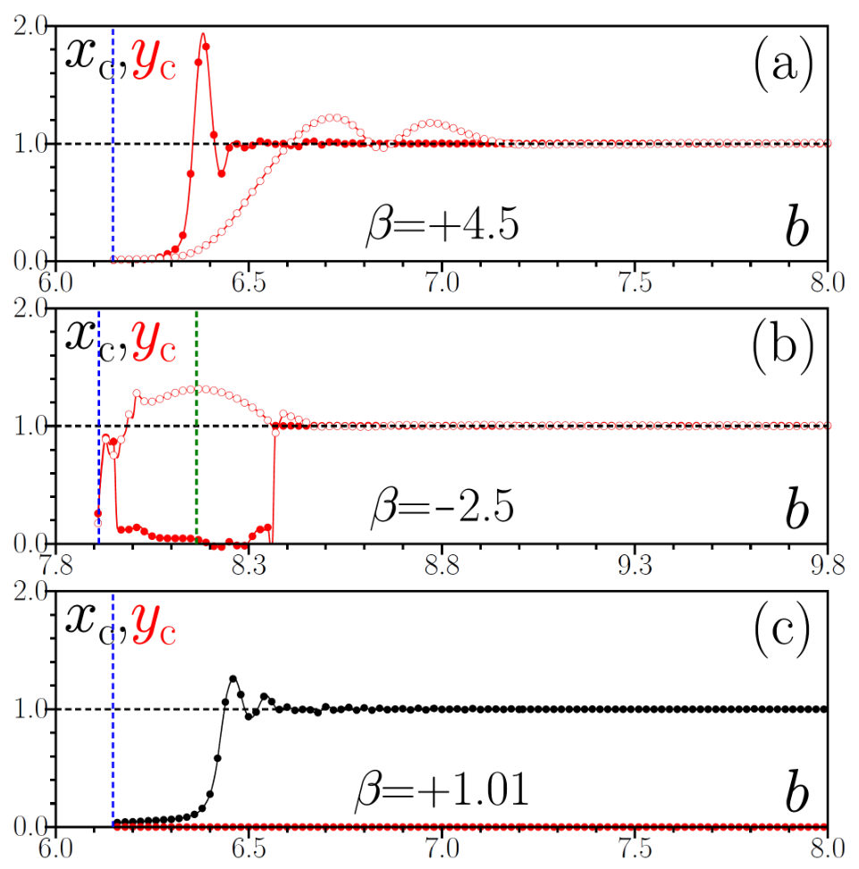
<figcaption class="paper-figure-caption"><b>Fig 3.</b> Fig 3 Soliton center of mass shift vs propagation constant. Coordinates of the soliton center of mass at z = Z versus propagation constant for β = +4.5 (a) and β = −2.5 (b) upon diagonal pumping with αx = αy = 0.01 (solid dots) and αx = αy = 0.05 (open dots). In this case xc and yc coincide. Vertical blue dashed lines indicate cutoff for soliton existence. Vertical greed dashed line in (b) corresponds to b value at which total soliton power U reaches its minimal value. (c) Coordinates xc, yc of the soliton center of mass at z = Z versus propagation constant for β = +1.01 upon pumping along the x−axis at αx = 0.01, αy = 0.</figcaption>
</figure>
<figure class="paper-figure-card">
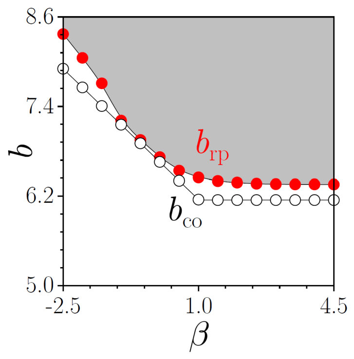
<figcaption class="paper-figure-caption"><b>Fig 4.</b> Fig 4 Domain of robust pumping of solitons on the (β, b) plane. Line with open circles shows cutoff bco for soliton existence vs phase mismatch β. Line with red circles shows propagation constant brp above which (shaded domain) robust pumping of solitons occurs at αx = αy = 0.01.</figcaption>
</figure>
<figure class="paper-figure-card">
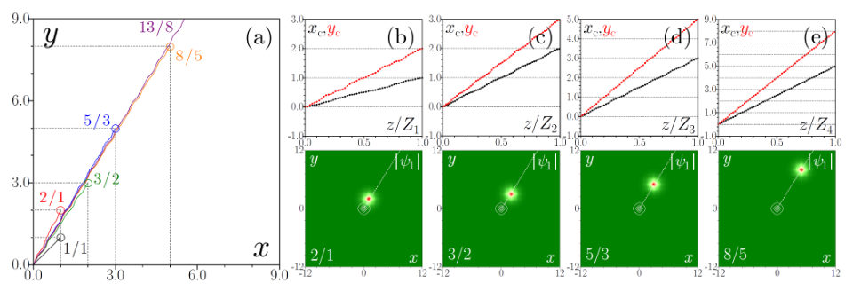
<figcaption class="paper-figure-caption"><b>Fig 5.</b> Fig 5 Two-dimensional incommensurate bichromatic pumping. (a) Trajectories of soliton center of mass on the (x, y) plane during one pumping cycle for sliding velocities αx = 0.01 and αy = (pn/qn)αx. Input soliton corresponds to β = 7, β = 1.01. BRAs pn/qn of the golden ratio φ = ( √</figcaption>
</figure>
</div>

<p><strong>Summary.</strong> This paper theoretically studies the quantized transport of two-dimensional solitons composed of two interacting optical frequencies (FF and SH) within a periodic nonlinear crystal. It establishes that the transport mechanism, known as Thouless pumping, is robust and can be controlled by the phase mismatch and the commensurability of the underlying lattice modulation. The findings extend the concept of topological pumping to complex 2D, multifrequency nonlinear systems.</p>
<p><strong>Why it may be interesting.</strong> This work bridges nonlinear optics, topological physics, and condensed matter concepts (like Bloch bands and pumping), providing a robust theoretical framework for understanding topological phenomena in nonlinear wave systems.</p>
<details>
<summary>Detailed structure</summary>
<p><strong>Main problem.</strong> The paper investigates the quantized transport (Thouless pumping) of two-dimensional multifrequency solitons.</p>
<p><strong>Main result.</strong> Stable, quantized topological transport is demonstrated for 2D solitons in $\chi^{(2)}$ nonlinear materials, persisting even when the lattice modulation periods are incommensurate.</p>
<p><strong>Method.</strong> The analysis uses the adiabatic approximation applied to coupled nonlinear wave equations, supplemented by linear spectral analysis and topological invariants like Chern numbers.</p>
<p><strong>Model / system.</strong> The system involves two-dimensional quadratic solitons composed of coherently interacting fundamental frequency (FF) and second harmonic (SH) components propagating in a periodic $\chi^{(2)}$ material.</p>
<p><strong>Key observables.</strong> Quantized center-of-mass displacement, power imbalance between FF and SH components, and the ratio of lattice periods converging to irrational numbers (e.g., the golden ratio).</p>
<p><strong>Important parameters / regimes.</strong> Phase mismatch ($eta$), soliton amplitude, and the ratio of longitudinal lattice periods ($Z_x/Z_y$).</p>
<p><strong>Assumptions / limitations.</strong> The analysis assumes the adiabatic character of the pumping process and utilizes approximations based on the quasi-stationary solutions of the coupled nonlinear equations.</p>
<p><strong>Figures summary.</strong> Figures illustrate the linear spectrum and the dependence of soliton profiles on phase mismatch ($eta$), and show the center-of-mass trajectories in the $(x, y)$ plane, demonstrating convergence towards irrational ratios.</p>
<p><strong>Paper structure.</strong> The paper progresses from establishing the governing coupled nonlinear equations to analyzing the linear spectrum and topological invariants, then detailing the three pumping regimes based on soliton amplitude, and finally extending the analysis to incommensurate lattice modulation.</p>
</details>
<details>
<summary>Abstract</summary>
<p>We consider Thouless pumping of two-dimensional quadratic solitons composed from coherently interacting fundamental frequency (FF) and second harmonic (SH) components propagating in a periodic $χ^{(2)}$ material. The pumping is induced by two mutually sliding two-dimensional lattices defined by shallow transverse and longitudinal periodic refractive index modulation. Focusing on solitons in the semi-infinite gap, we find three distinct pumping scenarios: the absence of transport for small-amplitude solitons, non-quantized transport in a transient regime at intermediate amplitudes, and stable quantized transport for solitons with relatively large amplitudes. Different directions of the sliding velocity were investigated resulting in different trajectories of soliton center. The transition to the regime of quantized transport is found to depend strongly on phase mismatch between FF and SH waves that also influences stability properties of two-dimensional $χ^{(2)}$ lattice solitons. We also show that pumping with longitudinal periods in the x and y directions, whose ratio approximates an irrational number, induces quantized transport whose direction rapidly converges, with increase of the accuracy of the approximation, to a limiting pumping direction determined by this irrational number and corresponding to truly incommensurate longitudinal periods.</p>
</details>
<p><sub><a href="#top">↑ back to top</a></sub></p>

<p><a id="paper-2609.07908"></a></p>
<h3 id="solid-state-nuclear-magnetic-resonance-search-for-axion-like-dark-matter-with-broadband-squid-magnetometry"><a href="http://arxiv.org/abs/2609.07908v1">Solid-state nuclear magnetic resonance search for axion-like dark matter with broadband SQUID magnetometry</a></h3>
<p><strong>Authors:</strong> Andrew J. Winter, János Ádám, Deniz Aybas, Dmitry Budker, Derek F. Jackson Kimball, Surjeet Rajendran, Arne Wickenbrock, Alexander O. Sushkov<br>
<strong>Type:</strong> experiment · <strong>Category:</strong> other · <strong>PDF:</strong> <a href="https://arxiv.org/pdf/2609.07908v1">https://arxiv.org/pdf/2609.07908v1</a><br>
<strong>Analysis basis:</strong> full PDF text, analyzed in chunks
<strong>Topic relevance:</strong> <code>quantum measurements</code> <strong>3/5</strong> · <code>analog quantum simulation</code> <strong>1/5</strong></p>
<div class="figure-strip-hint">↔ Scroll figures horizontally</div>
<div class="paper-figures-scroll">
<figure class="paper-figure-card">
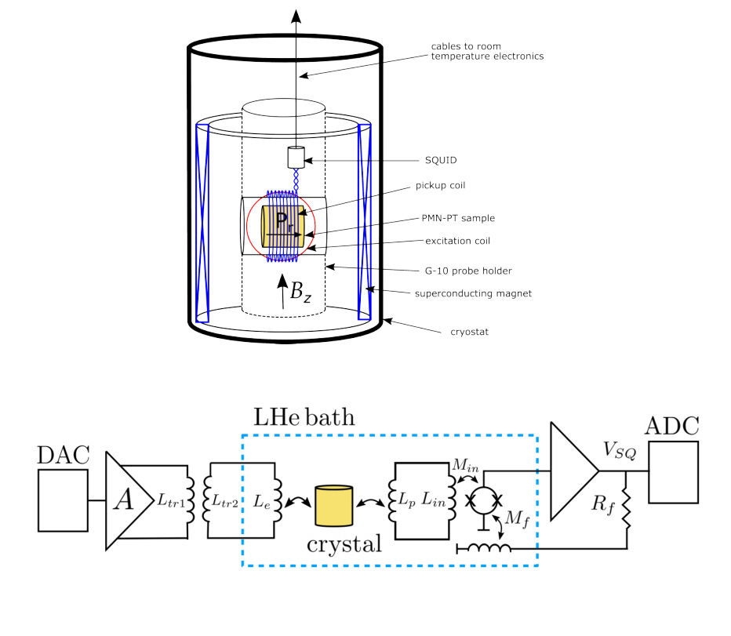
<figcaption class="paper-figure-caption"><b>Fig 1.</b> FIG. 1: Experimental setup schematic. Top: the CASPEr-electric apparatus schematic. A polarized ferroelectric PMN-PT sample is placed inside a superconducting magnet bore. The static magnetic field Bz and the ferroelectric polarization vector Pr are orthogonal to each other. An excitation coil and a separate pickup coil are wound around the sample. The latter is coupled to a SQUID, which resides within a niobium superconducting shield. The whole setup is immersed in liquid helium. Bottom: electronic circuit schematics. The digital to analog converter (DAC) delivers a pulse to the SRS SIM954 amplifier (A) with a gain factor of 4. A transformer with primary and secondary coils Ltr1 and Ltr2...</figcaption>
</figure>
<figure class="paper-figure-card">
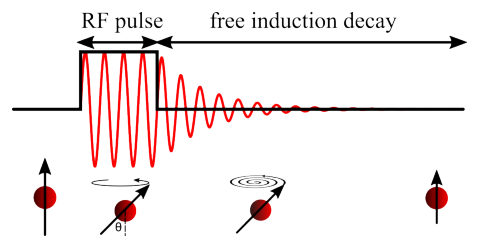
<figcaption class="paper-figure-caption"><b>Fig 2.</b> FIG. 2: Pulsed NMR sequence used for calibration FID measurements. The equilibrium magnetization of the spin ensemble is initially parallel to the leading field B0. An RF excitation pulse tips the magnetization into the transverse plane by an angle θ. The resulting FID signal is due to the spin ensemble precessing about the leading field as the transverse component decays.</figcaption>
</figure>
<figure class="paper-figure-card">
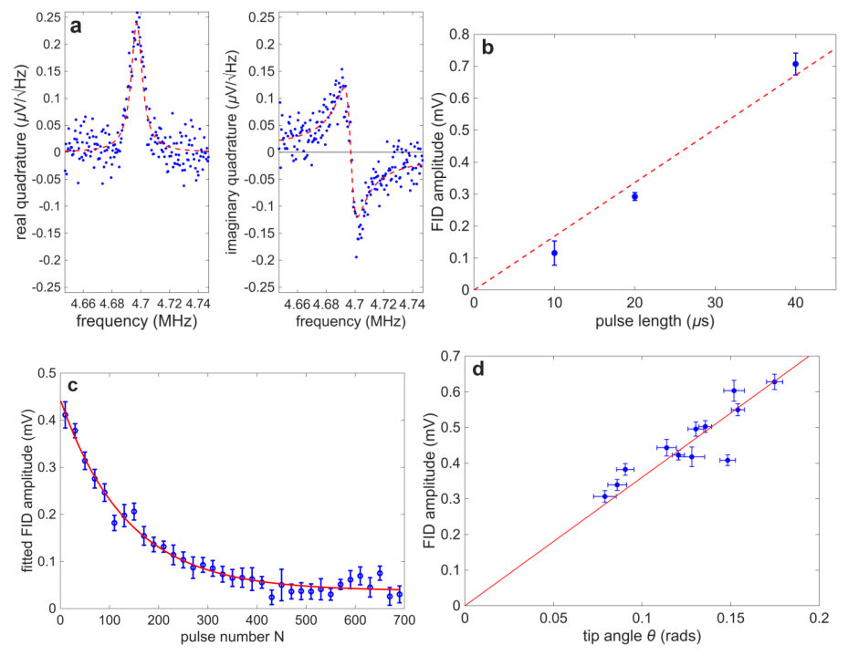
<figcaption class="paper-figure-caption"><b>Fig 3.</b> FIG. 3: Calibration measurements. a. Real and imaginary quadratures of the Fourier-transformed free induction decay data (20 averages) for 207Pb free induction decay in a PMN-PT single crystal, taken at the Larmor frequency f0 ≈4697 kHz. The data are modeled with Lorentzian lineshapes, the resulting best-fit FWHM linewidth is FWHM = Γ/π = 9 kHz. b. The dependence of FID amplitude on pulse duration. The linear behavior confirms the small-tip angle regime. c. The gradual saturation of nuclear spin magnetization by a series of small tip angle excitation pulses. The magnitude of each pulse tip angle θ is extracted from the A0 cosN θ fit model. d. The calibration of magnetic resonance detection...</figcaption>
</figure>
<figure class="paper-figure-card">
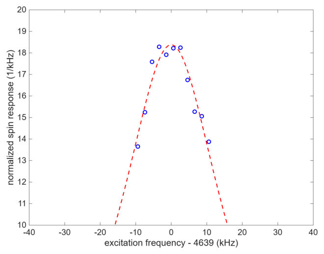
<figcaption class="paper-figure-caption"><b>Fig 4.</b> FIG. 4: The 207Pb excitation spectrum λ(ω). The leading magnetic field was held constant, corresponding to the Larmor frequency 4639 kHz, while 40 µs-long RF excitation pulses of varying frequencies were used to excite the spin FID. We model the spectrum as a Lorentzian (red, dashed line), normalized such that the area under the fit is unity.</figcaption>
</figure>
<figure class="paper-figure-card">
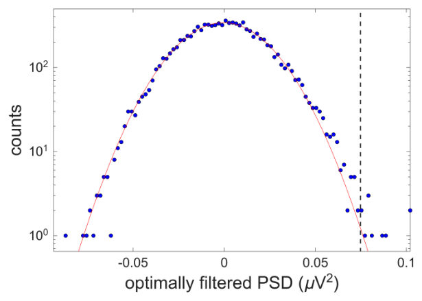
<figcaption class="paper-figure-caption"><b>Fig 5.</b> FIG. 5: The histogram of the data obtained after performing matched filtering on the data taken at the Larmor frequency of 4757 kHz. The histogram is modeled as a normal distribution (red line). Black, dashed line: 95 % confidence limit for a 5σ detection, indicating the minimum threshold to be considered an ALP candidate.</figcaption>
</figure>
</div>

<p><strong>Summary.</strong> This experiment searches for ultralight axion-like dark matter by measuring the oscillating torque it induces on nuclear spins in a solid-state system. Using broadband SQUID magnetometry on polarized $^{207}	ext{Pb}$, the researchers successfully calibrated their setup and set stringent upper bounds on the axion-nuclear electric dipole coupling constant. The results demonstrate a highly sensitive technique for probing fundamental physics in the nanoelectron-volt mass range.</p>
<p><strong>Why it may be interesting.</strong> This work bridges condensed matter techniques (solid-state NMR, SQUID magnetometry) with fundamental particle physics searches (axion dark matter), providing a highly sensitive, low-frequency measurement platform relevant to quantum sensing.</p>
<details>
<summary>Detailed structure</summary>
<p><strong>Main problem.</strong> The paper reports an experimental search for ultralight axion-like dark matter (ALPs) by looking for its coupling to the electric dipole moment of atomic nuclei.</p>
<p><strong>Main result.</strong> The experiment established upper bounds on the coupling constant $|g_d| < 4	imes 10^{-4} 	ext{ GeV}^{-2}$ in specific frequency bands, demonstrating sensitivity to ALPs in the nanoelectron-volt mass range.</p>
<p><strong>Method.</strong> The measurement uses solid-state nuclear magnetic resonance (NMR) on polarized $^{207}	ext{Pb}$ spins, detecting the oscillating torque induced by the ambient axion field using a superconducting quantum interference device (SQUID).</p>
<p><strong>Model / system.</strong> The system involves $^{207}	ext{Pb}$ spins polarized in a ferroelectric crystal, interacting with the axion field via an electric dipole moment coupling ($H_{EDM}$). The detection relies on measuring the induced oscillating magnetization ($M_{xy}$) coupled to the SQUID.</p>
<p><strong>Key observables.</strong> The induced perpendicular, rotating magnetization ($M_{xy}$) detected as a time-varying magnetic flux coupled to the SQUID, and the system response function $\alpha = V/	heta$.</p>
<p><strong>Important parameters / regimes.</strong> Axion mass ranges searched: 19.5–20.5 and 21.5–22 neV. The upper bound on the coupling constant is $|g_d| < 4	imes 10^{-4} 	ext{ GeV}^{-2}$.</p>
<p><strong>Assumptions / limitations.</strong> The analysis assumes the standard halo model for the dark matter field and operates in the small-tip-angle regime for the NMR response.</p>
<p><strong>Figures summary.</strong> Figure 1 schematically shows the experimental setup involving the polarized sample, magnet, and SQUID. Figure 2 illustrates the pulsed NMR sequence used for calibration measurements.</p>
<p><strong>Paper structure.</strong> The paper details the theoretical basis of the EDM coupling, describes the experimental setup using SQUID magnetometry on polarized $^{207}	ext{Pb}$, outlines the calibration procedure using pulsed NMR, and finally presents the derived upper bounds on the axion-nucleon coupling constant.</p>
</details>
<details>
<summary>Abstract</summary>
<p>We report the results of an experimental search for ultralight axion-like dark matter in the mass ranges 19.5--20.5 and 21.5--22 neV. The Cosmic Axion Spin Precession Experiment-electric probes the axion-nuclear electric dipole moment coupling. We perform solid-state nuclear magnetic resonance on $^{207}$Pb spin ensembles which reside in a polarized ferroelectric crystal. The background axion-like dark matter field induces an oscillating torque on the $^{207}$Pb spins via the electric dipole moment coupling $g_{d}$. The experiment is calibrated with pulsed magnetic resonance measurements covering two frequency bands (4.6--5.0 and 5.2--5.3 MHz) that correspond to the axion Compton frequencies associated with the identified axion mass ranges. By sweeping the leading magnetic field applied to the sample, we are able to detect the $^{207}$Pb nuclear magnetic resonance in these frequency ranges using a superconducting quantum interference device, inductively coupled to the sample with a broadband circuit. We establish the upper bounds $|g_{d}| < 4\times 10^{-4}$ GeV$^{-2}$ with 95% confidence in these frequency bands. Our results demonstrate the detection and small-tip angle calibration of low-field $^{207}$Pb nuclear magnetic resonance, allowing for sensitivity to axion-like dark matter in the nanoelectron-volt axion mass range.</p>
</details>
<p><sub><a href="#top">↑ back to top</a></sub></p>

<p><a id="paper-2609.08104"></a></p>
<h3 id="tunable-topological-narrow-bands-in-twisted-bilayer-trilayer-graphene"><a href="http://arxiv.org/abs/2609.08104v1">Tunable topological narrow bands in twisted bilayer-trilayer graphene</a></h3>
<p><strong>Authors:</strong> Dong Wang, Federico Escudero, Zhen Zhan, Shengjun Yuan<br>
<strong>Type:</strong> theory · <strong>Category:</strong> strongly correlated electrons · <strong>PDF:</strong> <a href="https://arxiv.org/pdf/2609.08104v1">https://arxiv.org/pdf/2609.08104v1</a><br>
<strong>Analysis basis:</strong> full PDF text, analyzed in chunks
<strong>Topic relevance:</strong> <code>analog quantum simulation</code> <strong>3/5</strong></p>
<div class="figure-strip-hint">↔ Scroll figures horizontally</div>
<div class="paper-figures-scroll">
<figure class="paper-figure-card">
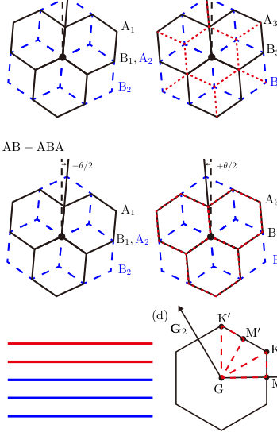
<figcaption class="paper-figure-caption"><b>Fig 1.</b> FIG. 1. Schematic atomic structures and moir´e geome- try of twisted bilayer–trilayer graphene. (a) AB-stacked bi- layer graphene and ABC-stacked trilayer graphene, rotated by −θ/2 and +θ/2, respectively, to form the AB–ABC con- figuration. (b) Corresponding construction of the AB–ABA configuration. Atoms sharing the same in-plane position are listed together, while the subscripts label the graphene layers. (c) Layer-dependent electrostatic potential used to model a perpendicular electric field, with onsite energies (2∆, ∆, 0, −∆, −2∆) assigned from the top to the bottom layer. (d) Moir´e Brillouin zone, showing the reciprocal lat- tice vectors G1 and G2 and the high-symmetry points G, M, M...</figcaption>
</figure>
<figure class="paper-figure-card">
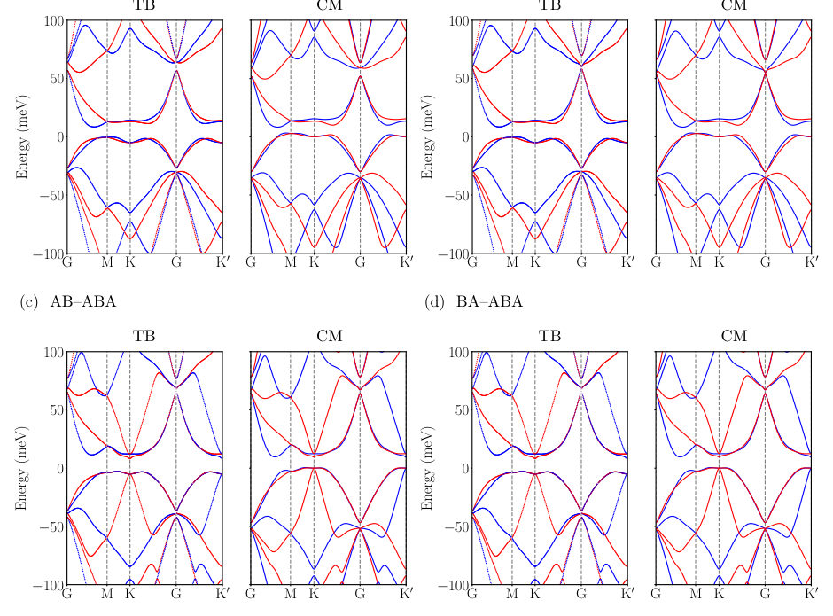
<figcaption class="paper-figure-caption"><b>Fig 2.</b> FIG. 2. Low-energy band structures from the TB and CM approaches for the unrelaxed AB–ABC, BA–ABC, AB–ABA, and BA–ABA stackings at a twist angle of 1.54◦. In the CM results, the +1 and −1 valleys are shown in red and blue, respectively. In the TB results, the valley character is resolved using the valley operator. The hopping terms in the CM model are adapted to have a good agreement of the band structures with the TB results. We set γAA = γAB = 95 meV.</figcaption>
</figure>
<figure class="paper-figure-card">
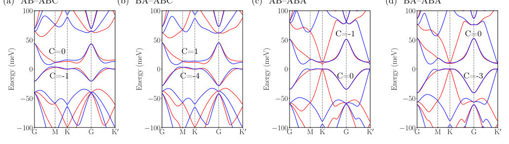
<figcaption class="paper-figure-caption"><b>Fig 3.</b> FIG. 3. Low-energy CM band structures for relaxed AB–ABC, BA–ABC, AB–ABA, and BA–ABA stacking configurations at a twist angle of θ = 1.54°. The hopping terms in the CM approach are the same as in Fig. 2. We consider the lattice relaxation by resetting γAA = 80 meV and γAB = 110 meV. The Chern numbers of the flat bands in the +1 valley are indicated.</figcaption>
</figure>
<figure class="paper-figure-card">
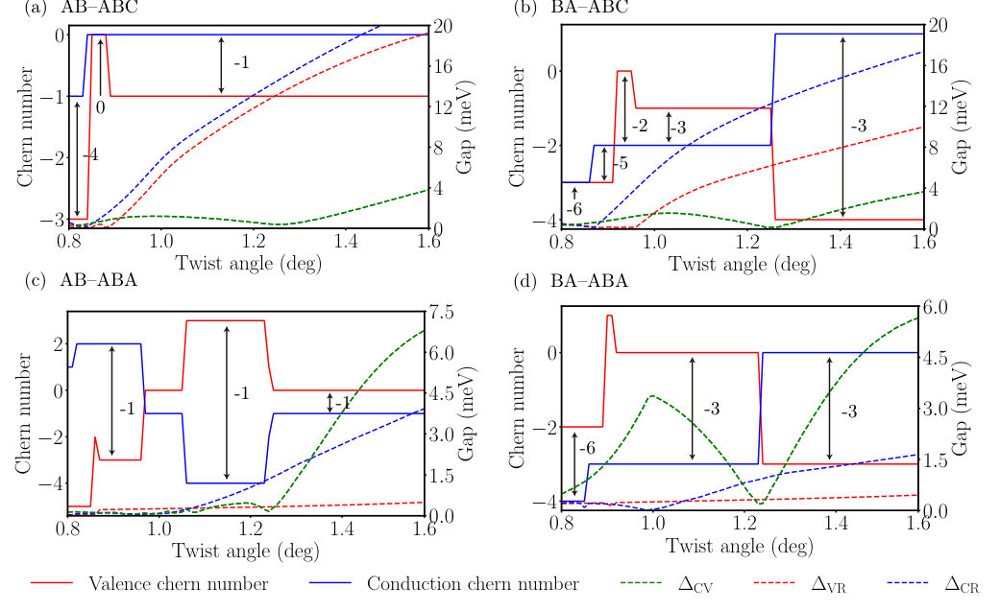
<figcaption class="paper-figure-caption"><b>Fig 4.</b> FIG. 4. Chern numbers and energy gaps as functions of twist angle for four stacking configurations: (a) AB–ABC, (b) BA– ABC, (c) AB–ABA, and (d) BA–ABA. The red and blue solid lines, corresponding to the left axis, denote the Chern numbers of the valence and conduction flat bands, respectively. The dashed lines, corresponding to the right axis, show the relevant band gaps: the green dashed line denotes the conduction-valence narrow band gap ∆CV, while the red and blue dashed lines denote the gaps between the valence and conduction flat bands and their nearest remote bands, labeled as ∆VR and ∆CR, respectively. The black lines with arrows shows the sum of the Chern number of the conduction...</figcaption>
</figure>
<figure class="paper-figure-card">
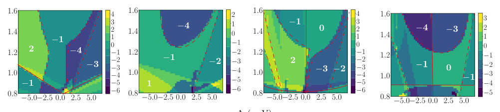
<figcaption class="paper-figure-caption"><b>Fig 5.</b> FIG. 5. Chern-number phase diagrams of the conduction flat band (top row) and valence flat band (bottom row) as functions of twist angle θ and perpendicular electric field E for (a) AB–ABC, (b) BA–ABC, (c) AB–ABA, and (d) BA–ABA stackings. The color scale represents the Chern number of the corresponding band. We label the Chern number for each color block. Red dashed lines indicate Type–I transition driven by the closing and reopening of the gap ∆CV, whereas red solid lines indicate Type–II transition associated with the gap ∆CR or ∆VR. Only the larger and well-isolated phase regions (can be easily recognized from the band gap) are labeled for clarity. A 100 × 100 k-point mesh is used in...</figcaption>
</figure>
</div>

<p><strong>Summary.</strong> This work analyzes the topological electronic structure of twisted bilayer-trilayer graphene, demonstrating that the system's band topology is highly tunable. By applying perpendicular electric fields and considering different stacking arrangements, the authors map out phase diagrams that control the Chern numbers of the narrow bands. This provides a theoretical roadmap for engineering topological materials using moiré heterostructures.</p>
<p><strong>Why it may be interesting.</strong> The ability to tune topological invariants (Chern numbers) using external fields like the electric field is a key concept in realizing artificial quantum Hall states, which is highly relevant to open quantum systems and correlated electron physics.</p>
<details>
<summary>Detailed structure</summary>
<p><strong>Main problem.</strong> The study investigates the low-energy band structure and topological properties of twisted bilayer-trilayer graphene, focusing on how these properties can be controlled.</p>
<p><strong>Main result.</strong> The perpendicular electric field is identified as an efficient tuning knob for controlling the stability and topological transitions of the narrow Chern bands. The interplay between stacking, twist angle, and electric field allows for engineering tunable topological bands.</p>
<p><strong>Method.</strong> The authors employed both tight-binding and continuum models to calculate the band structure and topological invariants (Chern numbers) across various physical parameters.</p>
<p><strong>Model / system.</strong> The physical system is twisted bilayer-trilayer graphene, analyzed across four specific stacking configurations (e.g., AB--ABC). The models incorporate the effects of twist angle, perpendicular electric field, and self-consistent Hartree potential.</p>
<p><strong>Key observables.</strong> Flat bands, valley Chern numbers, total Chern number, topological transitions (gap closing/reopening), and band structure evolution.</p>
<p><strong>Important parameters / regimes.</strong> Twist angle ($  heta$), perpendicular electric field ($E$), and the self-consistent Hartree potential ($V_H$).</p>
<p><strong>Assumptions / limitations.</strong> The analysis relies on the self-consistent Hartree approximation and assumes a C3z-symmetric relative registry.</p>
<p><strong>Figures summary.</strong> Figure 1 provides schematic atomic structures and moiré geometry for the key stacking configurations, such as AB–ABC and AB–ABA.</p>
<p><strong>Paper structure.</strong> The paper first establishes the agreement between tight-binding and continuum models, then systematically studies the evolution of flat bands and their Chern numbers under varying twist angles and electric fields, detailing two types of topological transitions. Finally, it maps out the topological phase diagrams.</p>
</details>
<details>
<summary>Abstract</summary>
<p>We investigate the low-energy band structure and topology of twisted bilayer--trilayer graphene with four stacking configurations: AB--ABC, BA--ABC, AB--ABA, and BA--ABA. Using both tight-binding and continuum models, we first establish that the two approaches show good agreement in the band structure in low-energy regime. We then study the evolution of the flat bands and their valley Chern numbers as functions of twist angle, perpendicular electric field, and the self-consistent Hartree potential. At relatively large twist angles and under electric field, we find a topological transition between the narrow bands, with the total Chern number of the flat bands following the Chern number sum rules derived from the chiral-limit description. We also observe another type of topological transition when the flat bands hybridize with adjacent remote bands, where gap closing and reopening processes lead to Chern number and charge density transfer. By constructing topological phase diagrams in the space of twist angle and electric field, we show that the perpendicular electric field provides an efficient tuning knob for controlling the stability and transitions of the Chern bands. Finally, we find that the Hartree potential mainly induce weak band shifts and reshaping in the narrow bands. However, with a combination of Hartree potential and the electric fields, the narrow bands show rich topological phase diagram. Our results clarify the interplay between the stacking, twist angle and electric field in manipulating the narrow bands and their topology in twisted bilayer--trilayer graphene, and provide guidance for engineering topological narrow bands with tunable Chern numbers in realistic twisted multilayer graphene systems.</p>
</details>
<p><sub><a href="#top">↑ back to top</a></sub></p>

<p><a id="paper-2609.08976"></a></p>
<h3 id="water-vacancies-and-competing-exchange-interactions-in-prussian-blue-analogues-a-neutron-diffraction-study-of-field-and-dehydration-driven-magnetic-transitions"><a href="http://arxiv.org/abs/2609.08976v1">Water, vacancies, and competing exchange interactions in Prussian blue analogues: a neutron diffraction study of field and dehydration-driven magnetic transitions</a></h3>
<p><strong>Authors:</strong> N. S. Dhami, C. V. Colin, V. Nassif, O. Fabelo, T. Nait, A. Bleuzen, A. Bordage, V. Balédent<br>
<strong>Type:</strong> both · <strong>Category:</strong> other · <strong>PDF:</strong> <a href="https://arxiv.org/pdf/2609.08976v1">https://arxiv.org/pdf/2609.08976v1</a><br>
<strong>Analysis basis:</strong> full PDF text, analyzed in chunks
<strong>Topic relevance:</strong> <code>analog quantum simulation</code> <strong>3/5</strong></p>
<div class="figure-strip-hint">↔ Scroll figures horizontally</div>
<div class="paper-figures-scroll">
<figure class="paper-figure-card">
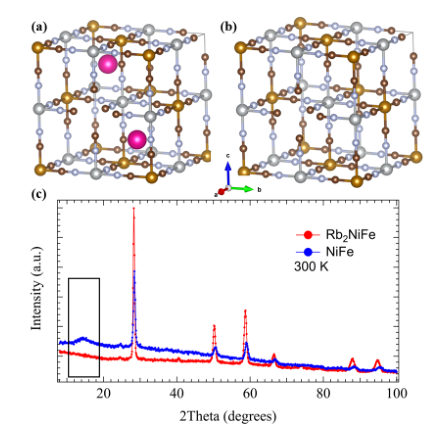
<figcaption class="paper-figure-caption"><b>Fig 1.</b> FIG. 1. Crystal structure layouts of the bimetallic Prus- sian blue analogues: (a) the cation-stabilized Rb2NiFe framework in the F43m space group and (b) NiFe crys- tallizing in the Fm3m space group. For clarity, the H2O molecules are omitted from both structural representa- tions. (c) Room-temperature (300 K) neutron diffrac- tograms of NiFe and Rb2NiFe. The broad diffuse scat- tering feature (bump) at low 2θ angles, associated with structural vacancies and coordinated water, is visibly ab- sent in the Rb2NiFe compound.</figcaption>
</figure>
<figure class="paper-figure-card">
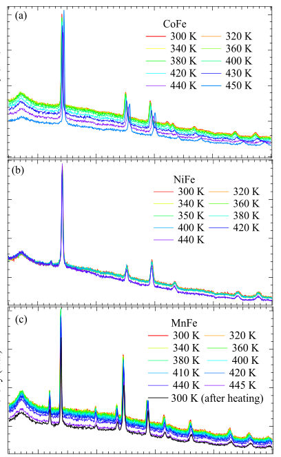
<figcaption class="paper-figure-caption"><b>Fig 2.</b> FIG. 2. High-temperature neutron diffraction patterns for the AFe-based PBA compounds: (a) CoFe, (b) NiFe, and (c) MnFe. The data highlight the structural evo- lution and the systematic reduction of the hydrogen- induced incoherent scattering background upon heat- ing/dehydration.</figcaption>
</figure>
<figure class="paper-figure-card">
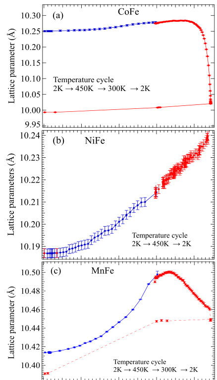
<figcaption class="paper-figure-caption"><b>Fig 3.</b> FIG. 3. Temperature dependence of the lattice param- eters for MnFe, CoFe, and NiFe. A continuous tuning from positive to negative thermal expansion coefficients is achieved upon heating for both MnFe and CoFe. Upon cooling back to 300 K after the full 2–450 K thermal cycle (i.e., in the dehydrated state), CoFe exhibits a structural contraction of 2.5 % relative to its initial hydrated state, while MnFe shows a minor reduction of 0.4 %. In con- trast, NiFe displays a monotonic lattice expansion over the entire range.</figcaption>
</figure>
<figure class="paper-figure-card">
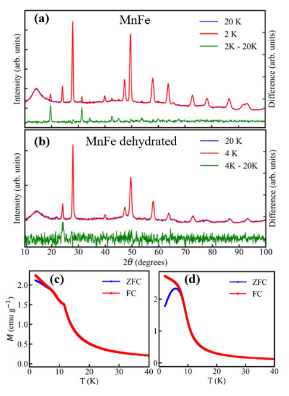
<figcaption class="paper-figure-caption"><b>Fig 4.</b> FIG. 4. (a) Neutron diffraction patterns at 20 K and 4 K, together with their difference, for non-dehydrated MnFe; (b) corresponding data for the dehydrated sam- ple. The difference pattern of the non-dehydrated sam- ple reveals distinct magnetic Bragg peaks, whereas in the dehydrated sample the magnetic contribution co- incides with the nuclear peaks, indicating a modified magnetic structure. The corresponding magnetization curves under ZFC and FC protocol at 500 Oe for the non-dehydrated and dehydrated samples are shown in (c) and (d), respectively.</figcaption>
</figure>
<figure class="paper-figure-card">
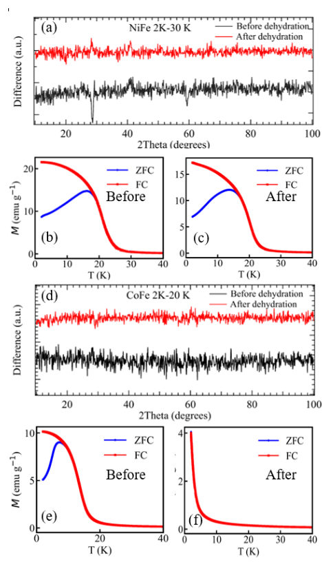
<figcaption class="paper-figure-caption"><b>Fig 5.</b> FIG. 5. Effect of dehydration: (a) The difference of neu- tron diffraction data of NiFe at 2 K and 30 K before and after dehydration. (b,c) Magnetization under ZFC and FC protocol at 500 Oe of NiFe before and after dehy- dration. (d) CoFe: Difference of neutron diffractograms at 2 K and 20 K before and after dehydration. (e, f) ZFC and FC Magnetization at 500 Oe before and after dehydration, respectively.</figcaption>
</figure>
</div>

<p><strong>Summary.</strong> This study uses neutron diffraction and magnetometry to examine Prussian blue analogues, demonstrating that the presence and loss of interstitial water significantly control the material's structural and magnetic properties. The research pinpoints the role of correlated vacancies as a key structural determinant that dictates the magnetic ground state and transition pathways in these compounds.</p>
<p><strong>Why it may be interesting.</strong> The work connects structural disorder (vacancies/water) directly to magnetic ground state selection and phase transitions, providing an example of how lattice dynamics can tune magnetic exchange interactions, which is relevant to correlated electron systems.</p>
<details>
<summary>Detailed structure</summary>
<p><strong>Main problem.</strong> The study investigates how structural changes, particularly those induced by water loss (dehydration) and external magnetic fields, govern the magnetic transitions in Prussian blue analogues (PBAs).</p>
<p><strong>Main result.</strong> Water content is established as a critical parameter controlling both the structural stability (e.g., thermal expansion) and the magnetic ground state of these materials.</p>
<p><strong>Method.</strong> The research combines neutron diffraction studies to probe structure and vacancy signatures with magnetic measurements and theoretical modeling using spin Hamiltonians.</p>
<p><strong>Model / system.</strong> The physical system is a family of ferro- and ferrimagnetic Prussian blue analogues (PBAs) with the general formula A_4[Fe(CN)6]2.7. The analysis models magnetic interactions using a minimal Heisenberg spin Hamiltonian to explain field-induced spin reorientations.</p>
<p><strong>Key observables.</strong> Magnetic ordering temperature (Tc), magnetic structure (propagation vector k), coefficient of thermal expansion (CTE), and diffuse scattering features indicating vacancies.</p>
<p><strong>Important parameters / regimes.</strong> Temperature range (2–450 K), applied magnetic field (up to 5 T), and the concentration/presence of interstitial water/vacancies.</p>
<p><strong>Assumptions / limitations.</strong> The magnetic transition in MnFe is modeled as a near-compensation point between Mn–Fe and Mn–Mn interactions. The analysis assumes specific magnetic configurations (collinear vs. frustrated).</p>
<p><strong>Figures summary.</strong> Figures show neutron diffractograms highlighting diffuse scattering from vacancies, temperature dependence of lattice parameters showing CTE crossovers, and M-H curves demonstrating field-induced spin reorientation.</p>
<p><strong>Paper structure.</strong> The paper systematically analyzes structural changes (diffraction, CTE) linked to water content, followed by detailed magnetic characterization (magnetization, magnetic structure determination via Rietveld refinement) to establish the role of water in controlling magnetic ground states.</p>
</details>
<details>
<summary>Abstract</summary>
<p>We report a neutron diffraction study of the structural and magnetic properties of a family of ferro- and ferrimagnetic Prussian blue analogues (PBAs), $A_4$[Fe(CN)$_6$]$_{2.7}$ ($A$ = Co, Mn, Ni), Rb$_2$Ni$_4$[Fe(CN)$_6$]$_{3.3}$, and Mn$_4$[Cr(CN)$_6$]$_{2.7}$, as a function of temperature (2--450~K) and applied magnetic field. All bimetallic compounds of the Fm$\overline{3}$m family exhibit a broad diffuse feature at low scattering angle, which we identify, through comparison with the cation-stabilized Rb$_2$NiFe framework, as an intrinsic signature of correlated vacancies and their associated interstitial water. High-temperature diffraction reveals a continuous crossover from positive to negative thermal expansion in CoFe and MnFe upon dehydration, while NiFe remains structurally robust up to 450~K. At low temperature, all compounds order in a collinear ferrimagnetic state with propagation vector $\mathbf{k}=(0,0,0)$, except MnFe, which adopts a partially frustrated magnetic structure with $\mathbf{k}=(1,0,0)$. A moderate magnetic field of $B_c = 1.3$~T drives a spin reorientation in MnFe toward the collinear $\mathbf{k}=(0,0,0)$ ferrimagnetic state common to the other compounds; the same transition is independently induced by dehydration. A minimal Heisenberg model shows that this transition results from a near-compensation between antiferromagnetic Mn--Fe coupling and a geometrically frustrated antiferromagnetic Mn--Mn interaction on the face-centered-cubic Mn sublattice, placing MnFe in the vicinity of a magnetic compensation point. These results resolve a longstanding ambiguity in the interpretation of the Fe $K$-edge XMCD response of MnFe-based PBAs, and establish water content as a key parameter controlling both the structural and magnetic stability of this family of materials, with direct relevance to their use as battery electrodes.</p>
</details>
<p><sub><a href="#top">↑ back to top</a></sub></p>

<p><a id="paper-2609.08928"></a></p>
<h3 id="thermomechanics-of-dense-granular-materials-a-particle-scale-perspective"><a href="http://arxiv.org/abs/2609.08928v1">Thermomechanics of dense granular materials: a particle-scale perspective</a></h3>
<p><strong>Authors:</strong> Matthew R. Kuhn<br>
<strong>Type:</strong> theory · <strong>Category:</strong> statistical mechanics · <strong>PDF:</strong> <a href="https://arxiv.org/pdf/2609.08928v1">https://arxiv.org/pdf/2609.08928v1</a><br>
<strong>Analysis basis:</strong> full PDF text, analyzed in chunks
<strong>Topic relevance:</strong> <code>analog quantum simulation</code> <strong>2/5</strong> · <code>correlated / nonlocal dissipation</code> <strong>2/5</strong> · <code>driven-dissipative phase transition</code> <strong>2/5</strong> · <code>methods for driven-dissipative</code> <strong>2/5</strong> · <code>non-equilibrium universality</code> <strong>2/5</strong> · <code>quantum measurements</code> <strong>2/5</strong> · <code>Frenkel-Kontorova</code> <strong>1/5</strong> · <code>Keldysh / 2PI / non-Gaussian methods</code> <strong>1/5</strong> · <code>scars &amp; prethermalization</code> <strong>1/5</strong></p>
<div class="figure-strip-hint">↔ Scroll figures horizontally</div>
<div class="paper-figures-scroll">
<figure class="paper-figure-card">
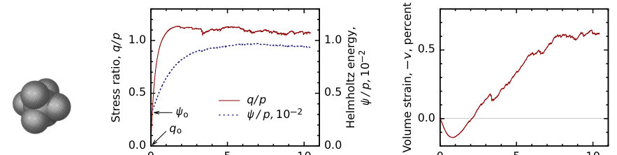
<figcaption class="paper-figure-caption"><b>Fig 1.</b> Figure 1: (a) Seven-sphere particle. Results of constant-𝑝triaxial compression: (b) deviatoric stress 𝑞and free energy 𝜓, and (c) volume change.</figcaption>
</figure>
<figure class="paper-figure-card">
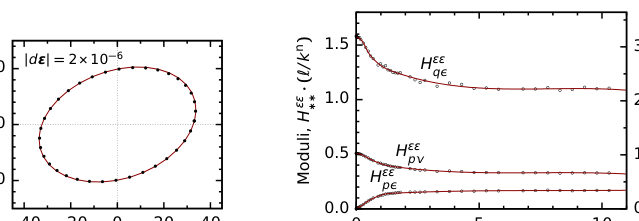
<figcaption class="paper-figure-caption"><b>Fig 2.</b> Figure 2: Moduli H𝜺𝜺during constant-𝑝loading, determined from strain probes with contact sliding suppressed: (a) comparison between stress increments 𝑑𝝈and those computed with the product H𝜺𝜺·𝑑𝜺; and (b) components of reversible modulus H𝜺𝜺, presented in alternative dimensionless forms.</figcaption>
</figure>
<figure class="paper-figure-card">
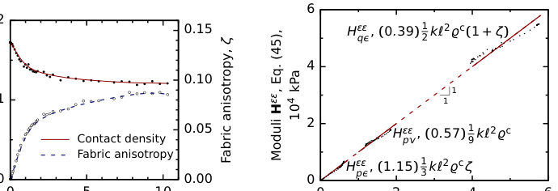
<figcaption class="paper-figure-caption"><b>Fig 3.</b> Figure 3: Fabric and reversible moduli at 48 strains during constant-𝑝loading: (a) contact density 𝜚c = 𝑀′/𝑉and fabric anisotropy 𝜁= 𝛽fab 11 −𝛽fab 22 , and (b) comparison of the reversible moduli H𝜺𝜺predicted with Eq. (46) and the moduli measured in DEM simulations. Factors 0.39, 0.57, and 1.15 are multiplied by the predictions of Eq. (44) to approximate the simulation data. The red line represents perfect conformance between estimated and measured values.</figcaption>
</figure>
<figure class="paper-figure-card">
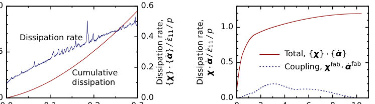
<figcaption class="paper-figure-caption"><b>Fig 4.</b> Figure 4: Frictional dissipation during constant-𝑝triaxial compression: (a) cumulative dissipation (red) and dissipation rate (blue) at small strains, (b) total dissipation rate (red) and the dissipation rate due to coupling (blue) of the reversible modulus H𝜺𝜺and the internal fabric 𝜶fab.</figcaption>
</figure>
<figure class="paper-figure-card">
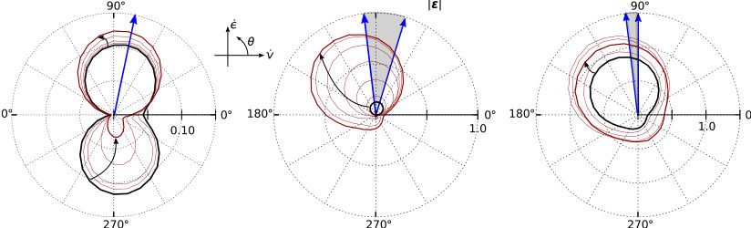
<figcaption class="paper-figure-caption"><b>Fig 5.</b> Figure 5: Polar plots of dissipation rates for strain-probes within the Rendulic plane: angles 𝜃are strain directions tan−1( ¤𝜖/ ¤𝑣), and radii are normalized dissipations. Each line represents 80 probes. Three strain ranges are shown, and curved arrows show trends within each range. Heavier black lines are results at the start of each range. Blue arrows (and shaded angles) show the directions of strain during prior monotonic loading.</figcaption>
</figure>
</div>

<p><strong>Summary.</strong> This paper establishes a rigorous thermomechanical framework for understanding how dense granular materials behave under stress. It shows that standard assumptions from continuum mechanics break down due to pervasive energy dissipation during contact sliding. The work emphasizes the need for advanced constitutive models that accurately capture the complex, non-smooth nature of granular material response.</p>
<p><strong>Why it may be interesting.</strong> While focused on classical mechanics, the rigorous treatment of non-equilibrium energy dissipation, path dependence, and the failure of simple constitutive assumptions mirrors challenges in modeling non-equilibrium quantum systems or complex many-body dynamics.</p>
<details>
<summary>Detailed structure</summary>
<p><strong>Main problem.</strong> Developing a comprehensive thermomechanical framework to describe the isothermal, rate-independent constitutive behavior of dense granular materials.</p>
<p><strong>Main result.</strong> The paper demonstrates that basic elastoplastic assumptions fail for granular materials, necessitating advanced constitutive models that account for pervasive dissipation and non-smooth energy landscapes.</p>
<p><strong>Method.</strong> The authors utilize a combination of continuum mechanics theory, energy rate balance equations, and direct measurement techniques derived from Discrete Element Method (DEM) simulations.</p>
<p><strong>Model / system.</strong> The system is dense granular material, modeled using a thermomechanical framework that incorporates internal variables for fabric (reversible stiffness) and structure (dissipation). The analysis is based on energy rate balance equations derived from the Helmholtz free energy density.</p>
<p><strong>Key observables.</strong> Free energy ($\psi$), dissipation rate, stress ($oldsymbol{\sigma}$), and strain ($oldsymbol{\varepsilon}$), which are directly measurable in DEM simulations.</p>
<p><strong>Important parameters / regimes.</strong> Isothermal conditions, rate-independence, and the nature of internal variables (fabric and structure).</p>
<p><strong>Assumptions / limitations.</strong> The framework assumes rate-independence and isothermal conditions, but acknowledges that the free energy may not be smoothly differentiable, requiring the use of Gâteaux derivatives.</p>
<p><strong>Paper structure.</strong> The paper progresses by establishing the energy rate balance, proposing internal variable sets for fabric and structure, testing these variables against DEM results, and finally comparing the findings against standard elastoplastic assumptions.</p>
</details>
<details>
<summary>Abstract</summary>
<p>The paper presents a broad thermomechanic framework for the isothermal rate-independent constitutive behavior of dense granular materials. The essential quantities in this framework are directly measurable in discrete element (DEM) simulations: free energy, dissipation, stress, and strain. The paper proposes that energy and dissipation are governed by two sets of internal variables: fabric variables that control the reversible stiffness and structure variables associated with internal sliding. The relevant fabric variables are identified and measured with simulations. Two hypotheses are considered for the structure variables: the macro-scale irreversible strain and an aggregate measure of the micro-scale frictional forces among sliding contacts. Both hypotheses are tested with simulations, which allow direct calculation of the internal variables. The paper then demonstrates the manner in which the measured variables are applied in incremental constitutive models. Among other findings are the following. (1) Dissipation from contact sliding is pervasive and occurs in all directions of incremental loading. (2) Contact motions are not reversed by a reversal of the strain direction, and contacts continue to slide when loading is reversed. (3) The free energy can not be assumed smoothly differentiable; instead, Gâteaux derivatives must be used with irreversible effects. (4) Basic assumptions of elastoplasticity are contravened: no region of purely reversible strain exists, no uniform yield direction exists, no uniform flow direction exists, and irreversible strain is not proportional to the projected total strain. A three-mechanism elastoplasticity model, however, closely fit the DEM results, and methods are demonstrated for quantifying the model. The results emphasize that advanced constitutive models are needed for capturing the general incremental behavior of granular materials.</p>
</details>
<p><sub><a href="#top">↑ back to top</a></sub></p>

<p><a id="paper-2609.09050"></a></p>
<h3 id="reduction-based-dynamical-systems-analysis-of-nonlinear-wave-equations-a-review"><a href="http://arxiv.org/abs/2609.09050v1">Reduction Based Dynamical Systems Analysis of Nonlinear Wave Equations: A Review</a></h3>
<p><strong>Authors:</strong> Naresh Saha, Arnob Ray<br>
<strong>Type:</strong> theory · <strong>Category:</strong> other · <strong>PDF:</strong> <a href="https://arxiv.org/pdf/2609.09050v1">https://arxiv.org/pdf/2609.09050v1</a><br>
<strong>Analysis basis:</strong> full PDF text, analyzed in chunks
<strong>Topic relevance:</strong> <code>analog quantum simulation</code> <strong>2/5</strong> · <code>Keldysh / 2PI / non-Gaussian methods</code> <strong>1/5</strong> · <code>correlated / nonlocal dissipation</code> <strong>1/5</strong> · <code>driven-dissipative phase transition</code> <strong>1/5</strong> · <code>methods for driven-dissipative</code> <strong>1/5</strong> · <code>non-equilibrium universality</code> <strong>1/5</strong></p>
<div class="figure-strip-hint">↔ Scroll figures horizontally</div>
<div class="paper-figures-scroll">
<figure class="paper-figure-card">

<figcaption class="paper-figure-caption"><b>Fig 1.</b> Figure 1: End-to-end methodological workflow for reduction based nonlinear wave analysis. The workflow begins with physical model formulation, scaling, and nondimensionalization, followed by an appropriate travelling wave, similarity, Galilean, or symmetry reduction. The resulting profile system is analyzed through its equilibria, invariant structures, first integrals, and phase space geometry, from which exact or semi-exact waveforms are reconstructed. Stability and bifurcation analyses are then combined with physically motivated perturbations and quantitative complexity diagnostics. Robustness is assessed with respect to initial conditions, parameter uncertainty, numerical tolerances, and...</figcaption>
</figure>
<figure class="paper-figure-card">

<figcaption class="paper-figure-caption"><b>Fig 2.</b> Figure 2: Connection between reduced phase space dynamics, exact waveform reconstruction, and perturbation induced response. (a) Phase portrait of the representative reduced system R′′ = R −R3, showing the saddle at (0, 0), the centers at (±1, 0), and the homoclinic separatrices. (b) Representative travelling wave reconstruction: the homoclinic orbit gives the exact localized waveform R(ξ) = √</figcaption>
</figure>
<figure class="paper-figure-card">

<figcaption class="paper-figure-caption"><b>Fig 3.</b> Figure 3: Diagnostic hierarchy for perturbation induced dynamics. Following the construction of the reduced system and identification of its phase space structure, perturbations are introduced and the resulting dynamics are examined using complementary diagnostics. Poincaré sections characterize stroboscopic geometry, Lyapunov exponents quantify asymptotic sensitivity to initial conditions, and recurrence analysis provides complementary information on trajectory recurrence and structure of phase space. Consistent results from independent diagnostics provide stronger evidence for deterministic chaos than visual complexity alone. These diagnostics characterize complexity within the reduced...</figcaption>
</figure>
<figure class="paper-figure-card">

<figcaption class="paper-figure-caption"><b>Fig 4.</b> Figure 4: Representative nonlinear wave equation families considered in this review. The classification emphasizes the mathematical structures relevant to reduction, phase space analysis, waveform reconstruction, and subsequent stability or dynamical diagnostics. Individual models may belong to more than one category when higher order, fractional, coupled, nonparaxial, or dissipative effects are present.</figcaption>
</figure>
</div>

<p><strong>Summary.</strong> This review presents a comprehensive, reduction-based methodology for analyzing nonlinear wave equations by mapping them onto lower-dimensional dynamical systems. It argues that understanding the invariant structures and stability of the reduced phase space is more crucial than finding isolated analytical solutions. This framework provides a robust tool for predicting wave behavior, assessing stability, and designing control mechanisms in various physical systems.</p>
<p><strong>Why it may be interesting.</strong> While focused on general nonlinear PDEs, the rigorous connection between phase space geometry and physical wave structures is a powerful tool for analyzing complex dynamics in quantum optics (e.g., NLSE) and plasma physics.</p>
<details>
<summary>Detailed structure</summary>
<p><strong>Main problem.</strong> The paper addresses the complex analysis of nonlinear wave equations, which exhibit rich wave structures due to the interplay of dispersion, nonlinearity, and forcing terms.</p>
<p><strong>Main result.</strong> It establishes a reduction-based framework showing that the underlying phase-space structures (like invariant orbits) of the reduced dynamical system geometrically represent the physically admissible waveforms of the original PDE.</p>
<p><strong>Method.</strong> The core method involves reducing high-dimensional nonlinear PDEs to finite-dimensional autonomous dynamical systems via transformations (e.g., travelling wave ansatz), followed by rigorous analysis of the resulting phase space.</p>
<p><strong>Model / system.</strong> The framework is applicable to a wide range of nonlinear wave equations, including Schrödinger-type, coupled, dissipative, shallow-water, and fractional wave equations.</p>
<p><strong>Key observables.</strong> Equilibria (constant states), periodic trajectories (periodic waves), homoclinic orbits (solitary waves), and heteroclinic connections (fronts/kinks).</p>
<p><strong>Important parameters / regimes.</strong> The analysis depends on the interplay of nonlinearity, dispersion, coupling strengths, and external forcing parameters.</p>
<p><strong>Assumptions / limitations.</strong> The framework prioritizes physical admissibility, stability, and robustness over merely generating formal analytical solutions, acknowledging limitations in parameter space characterization and correspondence with full PDE dynamics.</p>
<p><strong>Figures summary.</strong> The figures illustrate the end-to-end workflow: from PDE formulation to reduction, phase space analysis (showing how orbits map to waveforms), and the hierarchy of diagnostics used to confirm chaotic or stable behavior.</p>
<p><strong>Paper structure.</strong> The review is highly methodological, detailing the workflow: PDE formulation -&gt; Reduction to ODEs -&gt; Dynamical Systems Analysis (Phase Space) -&gt; Stability/Bifurcation Analysis -&gt; Full PDE Validation -&gt; Comparison with physical/experimental observables.</p>
</details>
<details>
<summary>Abstract</summary>
<p>Nonlinear wave equations exhibit rich interplay among dispersion, nonlinearity, coupling, dissipation, and external forcing, producing diverse coherent and complex wave structures. Although exact travelling-wave solutions provide analytical benchmarks, their construction alone does not reveal underlying phase-space, bifurcations, stability, or responses to perturbations. This review presents a reduction-based methodological framework connecting nonlinear partial differential equations(PDEs) to reduced dynamical systems, invariant phase-space structures, exact waveform reconstruction, stability analysis, and verification in PDEs. Its applicability and limitations are examined across Schr{ö}dinger-type, coupled, nonparaxial, dissipative, magnetic, shallow-water, and fractional wave equations. Particular emphasis is placed on correspondence between analytical waveforms and invariant orbits. Equilibria, periodic trajectories, homoclinic orbits, and heteroclinic connections geometrically represent constant, periodic, localized, and front-like structures, respectively. This review distinguishes existence and stability of invariant structures from onset of chaos, emphasizing complementary diagnostics rather than reliance on phase-portraits or finite-time indicators alone. Major methodological gaps include incomplete parameter-space characterization, weak correspondence between reduced models and full-PDE dynamics, ambiguities in generalized and fractional formulations, limited robustness analysis, inadequate numerical reproducibility, and insufficient links to experimental observables. The framework prioritizes physical admissibility, stability, robustness, and predictive relevance over generation of additional formal solutions. It supports reliable nonlinear wave prediction, stability assessment, control, and system design in fluid, optical, plasma, and other nonlinear physical systems.</p>
</details>
<p><sub><a href="#top">↑ back to top</a></sub></p>

<p><a id="paper-2609.09043"></a></p>
<h3 id="speed-and-stability-of-segregated-waves-in-a-pressure-based-model-of-heterogeneous-cell-populations"><a href="http://arxiv.org/abs/2609.09043v1">Speed and stability of segregated waves in a pressure-based model of heterogeneous cell populations</a></h3>
<p><strong>Authors:</strong> Carles Falcó, Rebecca M. Crossley, Martina Conte, Tommaso Lorenzi<br>
<strong>Type:</strong> theory · <strong>Category:</strong> other · <strong>PDF:</strong> <a href="https://arxiv.org/pdf/2609.09043v1">https://arxiv.org/pdf/2609.09043v1</a><br>
<strong>Analysis basis:</strong> full PDF text, analyzed in chunks
<strong>Topic relevance:</strong> <code>Keldysh / 2PI / non-Gaussian methods</code> <strong>2/5</strong> · <code>methods for driven-dissipative</code> <strong>2/5</strong> · <code>Frenkel-Kontorova</code> <strong>1/5</strong> · <code>driven-dissipative phase transition</code> <strong>1/5</strong> · <code>non-equilibrium universality</code> <strong>1/5</strong></p>
<div class="figure-strip-hint">↔ Scroll figures horizontally</div>
<div class="paper-figures-scroll">
<figure class="paper-figure-card">

<figcaption class="paper-figure-caption"><b>Fig 1.</b> Figure 1: Plots of the travelling wave speeds and solutions for the porous–Fisher model with θ-logistic and Gompertz growth laws. The two larger panels show the numerically estimated travelling wave speed (symbols) and the minimal wave speed predicted by using the variational principle (dashed lines) as a function of κ. For the θ-logistic growth law in blue (left larger panel), the minimal wave speed is predicted through Eq. (3.11); for the Gompertz growth law in red (right larger panel), the prediction of the minimal wave speed is made by using Eq. (3.13). The two smaller panels display representative travelling wave profiles for each of these growth laws (θ-logistic growth law in blue,...</figcaption>
</figure>
<figure class="paper-figure-card">

<figcaption class="paper-figure-caption"><b>Fig 2.</b> Figure 2: Plots of the speeds of segregated travelling waves from Eq. (2.11) complemented with Eq. (3.17). The numerically estimated travelling wave speed is plotted in symbols and the minimal wave speed predicted using the variational estimate in Eq. (3.18) is plotted in dashed lines as a function of µ for different values of γ (in blue, left panel) and as a function of γ for different values of µ (in red, right panel). As with the generalised porous–Fisher model (see the details in Sec.3.1), the numerical wave speeds were computed by solving the corresponding travelling wave boundary-value problem with continuation in parameter space.</figcaption>
</figure>
<figure class="paper-figure-card">

<figcaption class="paper-figure-caption"><b>Fig 3.</b> Figure 3: When segregated circular waves propagate, the leading order pressure given by Eq. (4.20) approximates the exact profile with the wave speed predicted by Eq. (4.21). The left panels display the plots of the cell densities ρ(x, y, t) (blue) and η(x, y, t) (red) at t = 10, and show the propagation of a segregated circular wave. The right panel displays the plot of the leading order pressure p0(r)/p. Numerical simulations are carried out setting µ = 1, ν = 2, and γ = 5, choosing an initial condition corresponding to a segregated circular wave with R0(0) = 4, eR0(0) = 8, R1(0) = 0, and eR1(0) = 0, the logistic-type net growth rate G(p) := 1 −p/¯p, and using the finite-volume splitting...</figcaption>
</figure>
<figure class="paper-figure-card">

<figcaption class="paper-figure-caption"><b>Fig 4.</b> Figure 4: Evolution and stability of segregated circular waves for different relative values of the mobility coefficients. The left panel shows the evolution of the inner-to-outer radius ratio R0/ eR0 for the cases (µ, ν) = (1, 2) (grey line) and (µ, ν) = (2, 1) (black line). In both cases, the ratio approaches 1 as the outer region occupied by non-proliferative cells becomes progressively thinner, although this occurs at different rates in the two cases. The right panels show the evolution of the perturbation amplitudes an and ean for different azimuthal modes n: here an(0) = 0.1 and ean(0) = 0 for every mode. For (µ, ν) = (1, 2), while the corresponding one-dimensional wave is stable, the...</figcaption>
</figure>
<figure class="paper-figure-card">

<figcaption class="paper-figure-caption"><b>Fig 5.</b> Figure 5: Destabilisation of a segregated circular wave despite the non-proliferative cells being more mobile than the proliferative cells (i.e., for ν &gt; µ), in contrast with the one-dimensional case. The left panels show the evolution of ρ(x, y, t) −η(x, y, t), illustrating the growth of interfacial perturbations and the development of protrusions at the interface between the two cell types. The right panel shows the plot of the amplitude an/R0 of the n = 12 mode as a function of the outer-to-inner radius ratio R0/ eR0. Numerical simulations are carried out setting µ = 2, ν = 2.5, and γ = 25, choosing an initial condition corresponding to a segregated circular wave with R0(0) = 5, eR0(0) =...</figcaption>
</figure>
</div>

<p><strong>Summary.</strong> This work analyzes a mathematical model for how two types of cells interact and move together, forming segregated waves. The authors derive explicit bounds on the wave speed using variational calculus and analyze the stability in both 1D and 2D. The findings clarify the conditions under which these cell fronts remain stable or break down into finger-like protrusions.</p>
<p><strong>Why it may be interesting.</strong> While the subject is biophysics/continuum mechanics, the mathematical techniques—variational bounds, free-boundary problems, and stability analysis of traveling waves—are highly relevant to the mathematical physics of pattern formation in complex systems.</p>
<details>
<summary>Detailed structure</summary>
<p><strong>Main problem.</strong> The paper investigates the speed, parameter dependence, and stability of segregated traveling wave solutions in a minimal pressure-based model describing heterogeneous cell populations.</p>
<p><strong>Main result.</strong> It derives an almost explicit variational bound for the wave speed and shows that 1D stability requires non-proliferative cells to be more mobile than proliferative cells, while 2D stability is more complex.</p>
<p><strong>Method.</strong> The study employs variational methods by reformulating the problem as a free-boundary problem for a generalized porous-Fisher equation, alongside asymptotic shape-perturbation analysis for circular waves.</p>
<p><strong>Model / system.</strong> The model is a system of reaction-cross-diffusion equations describing two cell types (proliferative and non-proliferative) whose movement is governed by a pressure law derived from their total density.</p>
<p><strong>Key observables.</strong> Wave speed, stability of segregated waves, pressure, interface velocity, and growth rates of angular modes.</p>
<p><strong>Important parameters / regimes.</strong> Mobility coefficients ($\mu, 
u$), growth rate function $G(p)$, and the relative values of $\mu$ and $
u$.</p>
<p><strong>Assumptions / limitations.</strong> The model assumes pressure-based movement and analyzes the incompressible limit ($\gamma 	o \infty$) where the problem reduces to a sharp-interface free boundary problem.</p>
<p><strong>Figures summary.</strong> Figure 6 illustrates the destabilization of a circular wave, showing the growth of interfacial perturbations, particularly when the proliferative cells are more mobile than the non-proliferative cells.</p>
<p><strong>Paper structure.</strong> The paper first establishes the governing equations and then derives the variational bound for the wave speed. It proceeds to analyze the 1D stability, followed by a detailed asymptotic shape-perturbation analysis for 2D circular waves to characterize fingering instabilities.</p>
</details>
<details>
<summary>Abstract</summary>
<p>We consider a minimal pressure-based model of heterogeneous cell populations consisting of proliferative and non-proliferative cells with different mobilities. The model is formulated as a system of reaction--cross--diffusion equations describing the spatio-temporal dynamics of the cell densities. The model is known to admit one-dimensional travelling wave solutions with strictly segregated components: non-proliferative cells occupy a finite region at the leading edge, while proliferative cells remain at the rear. However, the speed, parameter dependence, and stability of these waves remain poorly understood. In this work, we derive an almost explicit variational bound on the wave speed by reformulating the problem as a free-boundary problem for a generalised porous--Fisher equation. The estimates we obtain apply to general pressure laws and growth kinetics, agree closely with the results of numerical simulations, and become sharp in the incompressible limit, where we formally recover a fully explicit characterisation of the wave speed. We then analyse the stability of the waves to show that segregated waves are stable only when non-proliferative cells are more mobile than proliferative cells. Finally, motivated by numerical observations of finger-like protrusions, we investigate the stability of incompressible segregated circular waves through asymptotic shape-perturbation analysis. This yields explicit expressions for the pressure, interface velocity, and growth rates of angular modes, thereby making evident the destabilisation mechanisms that may lead to the emergence of fingering instability. Interestingly, we find that, in contrast with the one-dimensional case, the stability of such circular waves is not determined solely by the relative value of the mobility coefficients, and thus instabilities may arise irrespective of which cell type has the larger mobility.</p>
</details>
<p><sub><a href="#top">↑ back to top</a></sub></p>

<p><a id="paper-2609.08447"></a></p>
<h3 id="impurity-as-a-probe-of-berry-curvature-and-wavefunction-winding-in-gapped-two-band-models"><a href="http://arxiv.org/abs/2609.08447v1">Impurity as a probe of Berry curvature and wavefunction winding in gapped two-band models</a></h3>
<p><strong>Authors:</strong> Reda Nabil, Pascal Simon, Andrej Mesaros<br>
<strong>Type:</strong> theory · <strong>Category:</strong> other · <strong>PDF:</strong> <a href="https://arxiv.org/pdf/2609.08447v1">https://arxiv.org/pdf/2609.08447v1</a><br>
<strong>Analysis basis:</strong> full PDF text, analyzed in chunks
<strong>Topic relevance:</strong> <code>Keldysh / 2PI / non-Gaussian methods</code> <strong>2/5</strong> · <code>methods for driven-dissipative</code> <strong>2/5</strong> · <code>analog quantum simulation</code> <strong>1/5</strong> · <code>quantum measurements</code> <strong>1/5</strong></p>
<div class="figure-strip-hint">↔ Scroll figures horizontally</div>
<div class="paper-figures-scroll">
<figure class="paper-figure-card">

<figcaption class="paper-figure-caption"><b>Fig 1.</b> FIG. 1. Notation for the honeycomb lattice model. Each unit-cell is formed of an atom A and an atom B shifted by δ1 from A. The Bravais lattice is spanned by the vectors a1 and a2 taken to be of unit length a = 1. The impurity term ˆV is localized on a site A, modifying its potential energy by V .</figcaption>
</figure>
<figure class="paper-figure-card">

<figcaption class="paper-figure-caption"><b>Fig 2.</b> FIG. 2. Bound-state energy ωb as a function of the impurity strength V for four gapped systems: hBN [M = 1, t1 = 10], Kane–Mele (KM) [˜tKM = 1, t1 = 10], MoS2 [see parameters from eq. (10)], and the quadratic model [M = 1, t = 100]. Blue dots show tight-binding results for a 300 × 300-unit-cell system, while solid orange lines correspond to the analytical continuum theory. For the three linear models (hBN, KM, and MoS2), the continuum results are fitted using the cut- off parameter ⃗a0 = (0, a/3), whereas the quadratic model requires no fitting parameter. The bound-state energy is re- stricted to the bulk gap. For hBN and the quadratic model, a bound state exists for values of V of the...</figcaption>
</figure>
<figure class="paper-figure-card">

<figcaption class="paper-figure-caption"><b>Fig 3.</b> FIG. 3. Detecting the winding number in LDOS for hBN model. (a) LDOS around the impurity in the tight-binding model with parameters t1 = 10M = 10, V = −80M leading to a bound state in the middle of the gap ωb = 0.0M. (b) Phase of the Fourier Transform of the LDOS in (a), showing the ±4π vortices at the K-points. (c) Amplitude of the LDOS in (a) after applying a Gaussian filter to extract modulations near the K-points, showing a wavefront dislocation of strength 2 (see text). (d) Phase of the filtered LDOS after applying a Gaussian filter on the K+ valley, shows a −4π-winding. (e) LDOS from analytical low-energy theory, showing the dislo- cation. (f) Phase of the Fourier transform of (e),...</figcaption>
</figure>
<figure class="paper-figure-card">

<figcaption class="paper-figure-caption"><b>Fig 4.</b> FIG. 4. Winding region in real space according to analytical low-energy theory of the hBN model. For a given impurity potential V producing a bound state at energy ωb (vertical axis), a circle of radius r (horizontal axis) detects a wavefront dislocation (region ”Winding” in plot) if the LDOS terms satisfy δρB(r, ωb) &gt; δρA(r, ωb) (see text). The ”Winding” region corresponds to strong impurity potential (see Fig. 2).</figcaption>
</figure>
<figure class="paper-figure-card">

<figcaption class="paper-figure-caption"><b>Fig 5.</b> Figure 4 reveals the real space region in which the LDOS of an impurity with potential V exhibits a wave- front dislocation, in the case of the illustrative low-energy hBN model. For the given value of V we find the bound state energy ωb from Eq. (25) (see Fig. 2a), and then we find the winding region as the set of distances r for which δρB(r, ωb) &gt; δρA(r, ωb). Above a critical impurity strength Vc, the condition δρB(r, ωb) &gt; δρA(r, ωb) is satisfied for all distances r, such that the winding is, in principle, observable on any loop around the impurity. Clearly, the LDOS decays exponentially, so in STS data the signal would only be present in a finite region around the impurity. This re-...</figcaption>
</figure>
</div>

<p><strong>Summary.</strong> This work demonstrates that the local density of states (LDOS) around impurities in gapped two-band materials can serve as a spectroscopic probe for non-local topological properties like the Berry curvature and wavefunction winding number. By analyzing the impurity-induced bound states, the authors establish a general relationship allowing the direct measurement of the Berry curvature from spectroscopic measurements.</p>
<p><strong>Why it may be interesting.</strong> The direct link established between a measurable spectroscopic quantity (LDOS) and a fundamental topological invariant (Berry curvature) provides a powerful, experimentally testable theoretical tool for condensed matter physics.</p>
<details>
<summary>Detailed structure</summary>
<p><strong>Main problem.</strong> The paper investigates using quasiparticle interference (QPI) near impurities to extract non-local topological properties, specifically the Berry curvature and wavefunction winding number, in gapped two-band electronic models.</p>
<p><strong>Main result.</strong> It establishes a direct, local connection showing that the Berry curvature can be unambiguously extracted from the spectroscopic Local Density of States (LDOS) induced by impurities, particularly in gapped systems.</p>
<p><strong>Method.</strong> The analysis employs the T-matrix formalism applied to the Green's function of the system, linearizing the Bloch Hamiltonian at high-symmetry points (valleys) to derive a continuum model.</p>
<p><strong>Model / system.</strong> The study focuses on minimal two-band models derived from lattice structures like the honeycomb lattice (e.g., hBN, TMDs), encompassing various dispersion types (Dirac, semi-Dirac, quadratic) parameterized by gap, winding number, and dispersion exponent.</p>
<p><strong>Key observables.</strong> Local Density of States (LDOS) induced by impurities, wavefunction winding number (W), and Berry curvature ($\Omega$).</p>
<p><strong>Important parameters / regimes.</strong> Gap ($\Delta_Q$), winding number ($W_Q$), and the strength of the impurity potential ($V$).</p>
<p><strong>Assumptions / limitations.</strong> The analysis relies on low-energy continuum expansions around high-symmetry points and assumes the impurity potential is strong enough to reveal the topological winding number.</p>
<p><strong>Figures summary.</strong> Figures illustrate the comparison between analytical continuum predictions and tight-binding results, and show the dependence of the winding region on filtering parameters.</p>
<p><strong>Paper structure.</strong> The paper progresses by deriving the low-energy continuum Hamiltonian from lattice structure factors, calculating the real-space Green's function, and finally using the T-matrix formalism to determine the impurity-induced LDOS and extract the topological invariants.</p>
</details>
<details>
<summary>Abstract</summary>
<p>We explore the possibility of using quasiparticle interference near impurities to extract non-local properties of bands. Focusing on the minimal two-band description of a system with multiple valleys, we show that the local density of states (LDOS) induced by non-magnetic impurities can effectively probe both the Berry curvature and the wavefunction winding, locally in each valley. We analyze gapped models based on Dirac, semi-Dirac, quadratic touching, and higher-order touching energy dispersions, in presence of a point-like potential scatterer. We find that for strong enough impurity potentials the LDOS along a contour around the impurity unambiguously shows the wavefunction winding number, in contrast to the case of gapless Dirac-like dispersions where the winding can be precluded by LDOS oscillations in the radial direction. We also establish a general connection between, on the one hand, the Berry curvature as a function of momentum locally in a valley, and on the other hand, the wavefunction winding number and the energy dispersion parameters, making hence the local Berry curvature directly observable from spectroscopic LDOS information.</p>
</details>
<p><sub><a href="#top">↑ back to top</a></sub></p>

<p><a id="paper-2609.08996"></a></p>
<h3 id="probing-antialtermagnetism-via-orbital-field-induced-spin-splitting"><a href="http://arxiv.org/abs/2609.08996v1">Probing Antialtermagnetism via Orbital-Field-Induced Spin Splitting</a></h3>
<p><strong>Authors:</strong> Zi-Ting Sun<br>
<strong>Type:</strong> theory · <strong>Category:</strong> strongly correlated electrons · <strong>PDF:</strong> <a href="https://arxiv.org/pdf/2609.08996v1">https://arxiv.org/pdf/2609.08996v1</a><br>
<strong>Analysis basis:</strong> full PDF text, analyzed in chunks
<strong>Topic relevance:</strong> <code>Keldysh / 2PI / non-Gaussian methods</code> <strong>2/5</strong> · <code>quantum measurements</code> <strong>2/5</strong></p>
<div class="figure-strip-hint">↔ Scroll figures horizontally</div>
<div class="paper-figures-scroll">
<figure class="paper-figure-card">

<figcaption class="paper-figure-caption"><b>Fig 1.</b> FIG. 1. Schematics of orbital-field-induced even-odd parity conversion in a bilayer antialtermagnet: (a), (b) Even-to-odd conversion: opposite even-parity d-wave textures in center- related layers acquire transverse Peierls shifts ±qB ⊥B∥, pro- ducing an odd-in-momentum spin splitting ∆(k) = −∆(−k). (c), (d) Odd-to-even conversion: opposite odd-parity p-wave textures produce an even-in-momentum splitting ∆(k) = ∆(−k). Red and blue denote spin ↑and ↓bands, respec- tively. Spectra in (b) and (d) are the upper branch (ν = +1) of Eq. (10) with t = 1, t⊥= 0.5, J = 0.6, µ = −0.2, d = 1, e/ℏ= 1, and qB = (0, −0.4).</figcaption>
</figure>
<figure class="paper-figure-card">

<figcaption class="paper-figure-caption"><b>Fig 2.</b> FIG. 2. Bilayer illustration of orbital-field-induced spin split- ting. (a) Spin-resolved Fermi-surface contours (red and blue) for the A-type AFM under B∥∥ˆx, displaced in opposite directions from the spin-degenerate zero-field contour (gray dashed). (b)–(d) Momentum-resolved splitting ∆+(k)/t from Eq. (11), which encodes the symmetry of the order parame- ter. The A-type AFM in (b) and d-wave AAM in (c) both produce odd-in-momentum splittings, but with distinct wave characters (py-like and p + f-like, respectively); the p-wave AAM in (d) produces an even, dxy-like splitting. The param- eters are identical to those used in Fig. 1.</figcaption>
</figure>
<figure class="paper-figure-card">

<figcaption class="paper-figure-caption"><b>Fig 3.</b> FIG. 3. Diagnostics of the order-parameter wave character in a bilayer AAM. (a), (b) The branch average (K+ + K−)/2 (black dashed) vanishes identically for the A-type AFM in (a) but is generically nonzero for the d-wave AAM in (b), dis- tinguishing the two without layer resolution. Red and blue curves show Kν(θB) for ν = + and ν = −, respectively, at (kx, ky) = (0.7, 1.0). (c), (d) Normalized field-induced out-of-plane spin polarization ˜Sα ⊥for odd-parity AAM, with S⊥normalized by its maximum absolute value. (c) Field- strength dependence at θB = 3π/2: p-wave order is linear in qB, whereas f-wave order is cubic (circles, exact numerical data; solid lines, fits). (d) Angular dependence at...</figcaption>
</figure>
</div>

<p><strong>Summary.</strong> This theoretical work details a method to overcome spectroscopic limitations in Antialtermagnets by using an in-plane orbital magnetic field. This field induces a spin splitting whose parity is opposite to the hidden magnetic order's parity, allowing researchers to spectroscopically determine the hidden order's wave character. The analysis relies on symmetry principles and momentum-space sum rules.</p>
<p><strong>Why it may be interesting.</strong> The technique of using orbital fields to probe hidden symmetries and order parameters is highly relevant to understanding complex magnetic ground states in correlated materials, providing a theoretical blueprint for advanced spectroscopic measurements.</p>
<details>
<summary>Detailed structure</summary>
<p><strong>Main problem.</strong> The primary challenge is spectroscopically identifying the hidden magnetic order parameter (and its parity/wave character) in Antialtermagnets (AAMs) when conventional bulk spectroscopy fails due to layer compensation.</p>
<p><strong>Main result.</strong> Applying an in-plane orbital magnetic field induces a spin splitting whose parity is opposite to the hidden order parameter's parity, providing a generic spectroscopic route to characterize the hidden order.</p>
<p><strong>Method.</strong> The analysis uses theoretical modeling involving field-dressed Hamiltonians and deriving symmetry constraints on the induced spin splitting ($\Delta_m(k; B)$) and net spin polarization ($S^\perp$).</p>
<p><strong>Model / system.</strong> The study focuses on a bilayer or multilayer system modeled as an AAM, characterized by a zero-field Hamiltonian exhibiting spin degeneracy due to center-exchange symmetry. The magnetic order parameter's parity ($\chi$) is central to the analysis.</p>
<p><strong>Key observables.</strong> Induced spin splitting ($\Delta_m(k; B)$), net spin polarization ($S^\perp(B_\parallel)$), and the momentum dependence of the form factor $f_\alpha(\mathbf{k})$ derived from band sum rules.</p>
<p><strong>Important parameters / regimes.</strong> In-plane magnetic field strength ($B$), layer number ($L=2N$), and the parity ($\chi$) of the hidden exchange order.</p>
<p><strong>Assumptions / limitations.</strong> The analysis assumes spin-orbit coupling is weak compared to the nonrelativistic exchange order, and that the orbital contribution can be separated from the Zeeman effect.</p>
<p><strong>Figures summary.</strong> Figures schematically illustrate the parity conversion (even-parity order $
ightarrow$ odd splitting, and vice versa) and show the field dependence of the splitting and polarization for different wave symmetries ($s, d, p$).</p>
<p><strong>Paper structure.</strong> The paper develops the theory by first establishing the spectral degeneracy, then introducing the orbital field to break this degeneracy, and finally using parity theorems, band sum rules, and weak-field expansions to distinguish between different types of hidden magnetic order.</p>
</details>
<details>
<summary>Abstract</summary>
<p>Layer compensation can conceal spin polarization behind a spin-degenerate bulk spectrum in antialtermagnets, preventing spectroscopic identification of the underlying magnetic order. Here we show that the orbital effect of an in-plane magnetic field converts the hidden spin texture into an observable spin splitting of opposite momentum parity, thereby restoring spectroscopic access. Once the parity of the hidden exchange order is determined, complementary response functions in the weak-field regime further resolve its wave character: within a minimal model, we illustrate that a band sum rule over the induced band splittings isolates the momentum gradient of the form factor and differentiates hidden even-parity orders, whereas for odd-parity sectors the induced net spin polarization exhibits characteristic field-amplitude and angular dependences. These results establish orbital-field-induced spin splitting as a generic route to identifying the hidden altermagnetic order parameter without layer resolution.</p>
</details>
<p><sub><a href="#top">↑ back to top</a></sub></p>

<p><a id="paper-2609.08278"></a></p>
<h3 id="neel-vector-control-of-the-josephson-diode-effect-in-math1183math-symmetric-antiferromagnets"><a href="http://arxiv.org/abs/2609.08278v1">Néel-Vector Control of the Josephson Diode Effect in $\mathcal{PT}$-symmetric Antiferromagnets</a></h3>
<p><strong>Authors:</strong> Xian-Tang Xu, Xun-Jiang Luo, Mingliang Tian, Ning Hao<br>
<strong>Type:</strong> theory · <strong>Category:</strong> other · <strong>PDF:</strong> <a href="https://arxiv.org/pdf/2609.08278v1">https://arxiv.org/pdf/2609.08278v1</a><br>
<strong>Analysis basis:</strong> full PDF text, analyzed in chunks
<strong>Topic relevance:</strong> <code>Keldysh / 2PI / non-Gaussian methods</code> <strong>2/5</strong> · <code>methods for driven-dissipative</code> <strong>1/5</strong></p>
<div class="figure-strip-hint">↔ Scroll figures horizontally</div>
<div class="paper-figures-scroll">
<figure class="paper-figure-card">

<figcaption class="paper-figure-caption"><b>Fig 1.</b> FIG. 1. (a) Two-sublattice antiferromagnetic SNS junction. Red A sites carry +Jnn and blue B sites carry −Jnn. (b) Full normal-state spectrum Eζk for the two branches ζ = ±1 as a function of ky at fixed kx = 0.3π and n ∥ˆx. Energies are in units of t. (c) Full BdG CPR at µ = −0.80t and Jn = 0.33t. The unequal extrema give η = 0.175 and display the diode response directly. The model parameters are t′ = 0.08t, ∆0 = 0.3t, µ = −1.5t, Jn = 0.8t, λ = 0.5t, dN = 3, and WS = 10.</figcaption>
</figure>
<figure class="paper-figure-card">

<figcaption class="paper-figure-caption"><b>Fig 2.</b> FIG. 2. (a) Full CPR for increasing λJn at fixed Jn/λ = 1.6. (b) Total diode efficiency versus the signed product λJn at J0 = 0.5t and λ0 = 0.5t. (c) Diode efficiency under a full in-plane rotation of the N´eel vector at Jn = 0.5t and λ = 0.5t. The dotted lines mark the mirror-symmetric orientations θ = π/2 and 3π/2, where the response vanishes. The other parameters are used as those of Fig. 1.</figcaption>
</figure>
<figure class="paper-figure-card">

<figcaption class="paper-figure-caption"><b>Fig 3.</b> FIG. 3. (a) Fixed-channel CPR from BdG and the low-energy Matsubara theory at kx = 0.3π and kBT = 0.05∆0. (b) Cor- responding harmonic mismatch (black and green as in panel a), δm = ϑm −mϑ1, showing that the Matsubara theory cap- tures the BdG phase pattern. (c) Channel-resolved diode efficiency ηkx (d) Fixed-channel CPR at kx = 0 from the full Green function and the effective bonding theory obtained through the Schur complement. The same parameters are used as those of Fig. 1.</figcaption>
</figure>
</div>

<p><strong>Summary.</strong> This theoretical study demonstrates that $\mathcal{PT}$-symmetric antiferromagnets can function as highly tunable Josephson diodes and $\varphi_0$-junctions. The key finding is that the Néel vector acts as a precise control knob, allowing switching of these superconducting phenomena by simple rotations or reversals of the magnetic order. The methodology combines advanced scattering theory with Green's function techniques to rigorously prove the mechanism.</p>
<p><strong>Why it may be interesting.</strong> This work provides a concrete, tunable platform for realizing superconducting diodes using magnetic order, linking fundamental symmetry concepts ($\mathcal{PT}$-symmetry, magnetic mirror) directly to measurable electrical properties.</p>
<details>
<summary>Detailed structure</summary>
<p><strong>Main problem.</strong> The study investigates the Josephson diode effect and $\varphi_0$-junction states in Josephson junctions formed by s-wave superconductors and $\mathcal{PT}$-symmetric collinear antiferromagnets.</p>
<p><strong>Main result.</strong> The diode effect and $\varphi_0$-junction state are shown to be controllable by the Néel vector orientation, with rotation by $90^\circ$ switching both effects off, and reversal flipping the diode polarity.</p>
<p><strong>Method.</strong> The authors employed microscopic modeling, symmetry analysis, and developed a channel-resolved scattering theory on the Matsubara axis, complemented by Green-function reduction techniques.</p>
<p><strong>Model / system.</strong> The system is a Josephson junction (SNS) where the weak link is a $\mathcal{PT}$-symmetric collinear antiferromagnet modeled on CuMnAs. The physics is governed by the Bogoliubov–de Gennes (BdG) Hamiltonian.</p>
<p><strong>Key observables.</strong> Josephson diode efficiency ($\eta$), anomalous phase ($\varphi_0$), and the current-phase relation (CPR).</p>
<p><strong>Important parameters / regimes.</strong> Néel vector orientation ($\mathbf{n}$), exchange field magnitude ($\lambda J_n$), and sublattice potential ($v$).</p>
<p><strong>Assumptions / limitations.</strong> The analysis involves approximations like replacing the Matsubara sum with an integral at low temperatures, and the Green-function reduction assumes the bonding sector carries the dominant current.</p>
<p><strong>Figures summary.</strong> Figures illustrate the CPR showing unequal critical currents for $\mathbf{n} \parallel \hat{x}$ vs. odd CPR for $\mathbf{n} \parallel \hat{y}$. Other figures show the tuning of $\varphi_0$ and $\eta$ with magnetic field parameters and validate the current calculation using full Green functions versus effective bonding sectors.</p>
<p><strong>Paper structure.</strong> The paper systematically develops the theory by first establishing the symmetry breaking condition ($M_y$ breaking) necessary for the effects. It then uses scattering theory to derive the CPR and efficiency, followed by a rigorous Green-function reduction to confirm the results and validate the single-band transport picture.</p>
</details>
<details>
<summary>Abstract</summary>
<p>The interplay of superconductivity and magnetism gives rise to rich phenomena in Josephson junctions. In this Letter, we study Josephson junctions formed by conventional $s$-wave superconductors and a $\PT$-symmetric collinear antiferromagnet modeled on CuMnAs. Using microscopic modeling and symmetry analysis, we show that these junctions exhibit both the Josephson diode effect and $\varphi_{0}$-junction states. Remarkably, both effects are controlled by the Néel vector: rotating it by $90^{\circ}$ switches off both, while reversing it switches the diode polarity. To reveal the microscopic mechanism, we develop a channel-resolved scattering theory that accurately captures the anomalous phases and establishes the exact condition for the diode effect. The interplay of the channel current-phase relations yields a sizable diode efficiency, tunable by both the magnitude and direction of the exchange field. Furthermore, a Green-function reduction identifies a single renormalized $\PT$-degenerate band as the transport carrier and precisely reproduces the full current amplitudes. Our work establishes $\PT$-symmetric antiferromagnets as versatile platforms for field-free, highly tunable Josephson diodes and $\varphi_{0}$ junctions.</p>
</details>
<p><sub><a href="#top">↑ back to top</a></sub></p>

<p><a id="paper-2609.08347"></a></p>
<h3 id="the-first-magic-angle-beyond-the-chiral-limit-in-twisted-bilayer-graphene"><a href="http://arxiv.org/abs/2609.08347v1">The First Magic Angle Beyond the Chiral Limit in Twisted Bilayer Graphene</a></h3>
<p><strong>Authors:</strong> Leonardo A. Navarro-Labastida, Pierre A. Pantaleon, Francisco Guinea, Gerardo G. Naumis<br>
<strong>Type:</strong> theory · <strong>Category:</strong> other · <strong>PDF:</strong> <a href="https://arxiv.org/pdf/2609.08347v1">https://arxiv.org/pdf/2609.08347v1</a><br>
<strong>Analysis basis:</strong> full PDF text, analyzed in chunks
<strong>Topic relevance:</strong> <code>analog quantum simulation</code> <strong>2/5</strong> · <code>Keldysh / 2PI / non-Gaussian methods</code> <strong>1/5</strong></p>
<div class="figure-strip-hint">↔ Scroll figures horizontally</div>
<div class="paper-figures-scroll">
<figure class="paper-figure-card">

<figcaption class="paper-figure-caption"><b>Fig 1.</b> FIG. 1. Band structure for the first magic angle, panels (a) and (b), and for a higher-order magic angle, panels (c) and (d), comparing the chiral model with the relaxation-renormalized non-chiral model at κ = 0.7. In the chiral model, the bands squeeze as a function of α, and the gap decreases exponentially as predicted by the chiral scaling theory. In the non-chiral model, the hybridization between the central bands and the first remote bands becomes substantially stronger, especially at small twist angles where the gap tends to close systematically.</figcaption>
</figure>
<figure class="paper-figure-card">

<figcaption class="paper-figure-caption"><b>Fig 2.</b> FIG. 2. E2(α) at the Γ point in semi-logarithmic scale for the non-chiral model κ ≈0.7 (red curve), compared with the chiral model κ = 0 (blue curve). The vertical black lines indicate the magic angles of the chiral theory. While the chiral model preserves an exponential squeezing of the spectrum, finite κ partially blocks this behavior and produces substantial deviations at higher-order magic angles.</figcaption>
</figure>
<figure class="paper-figure-card">

<figcaption class="paper-figure-caption"><b>Fig 3.</b> FIG. 3. Electronic density at the Γ point. First magic angle α1 = 0.586 for (a) the chiral limit κ = 0 and (b) the non-chiral model with κ = 0.7. Electronic density for the higher-order magic angle α9 = 12.860 for (c) the chiral limit κ = 0 and (d) the non-chiral model κ = 0.7. Finite κ induces a pronounced localization of the electronic density around the AA stacking regions.</figcaption>
</figure>
<figure class="paper-figure-card">

<figcaption class="paper-figure-caption"><b>Fig 4.</b> FIG. 4. Fourier coefficients |am,n|2 for the chiral (left column) and non-chiral (right column) models. Results are shown for the first magic angle, α1 = 0.586, and for the higher-order magic angle, α9 = 12.860. The non-chiral calculations use κ = 0.7, following previous estimates for relaxation-renormalized TBG [57]. Finite κ shifts spectral weight toward larger |Kmn|, indicating stronger localization in real space. It also enhances the trigonal anisotropy of the Fourier distribution while preserving the underlying C3 symmetry.</figcaption>
</figure>
<figure class="paper-figure-card">

<figcaption class="paper-figure-caption"><b>Fig 5.</b> FIG. 5. Effective potentials of the non-chiral squared Hamiltonian in real space. Panels (a) and (b) show the real and imaginary components of the intrinsic pseudo-magnetic vector potential A(r), respectively. Panels (c) and (d) display the antisymmetric confinement potential ∆(r) = i[Ax, Ay] and the symmetric confinement term A2(r). The non-chiral nature of the model introduces the complex sublattice-sector coupling potential VS(r), whose modulus and phase are shown in panels (e) and (f), respectively. The moir´e unit cell is indicated together with the AA stacking regions (red points) and the AB/BA stacking regions (yellow and green points).</figcaption>
</figure>
</div>

<p><strong>Summary.</strong> This work develops a theoretical model for twisted bilayer graphene, moving beyond the idealized chiral limit to include effects from lattice relaxation. It shows that the first magic angle is uniquely stable because the competing effects of confinement and current-like channels balance out, providing a single-particle mechanism for the breakdown of the magic-angle hierarchy.</p>
<p><strong>Why it may be interesting.</strong> While focused on condensed matter, the concept of symmetry protection (chiral limit) breaking by realistic perturbations ($\kappa 
eq 0$) and the resulting stability hierarchy is relevant to understanding topological phases in open quantum systems.</p>
<details>
<summary>Detailed structure</summary>
<p><strong>Main problem.</strong> The paper aims to explain the physical mechanism behind the differential stability of magic angles in twisted bilayer graphene (TBG) when lattice relaxation is considered.</p>
<p><strong>Main result.</strong> The first magic angle remains robust because the effects of lattice relaxation (confinement and current-like channels) remain balanced, whereas higher-order angles lose this balance due to enhanced hybridization and localization.</p>
<p><strong>Method.</strong> The analysis uses a single-particle, continuum model Hamiltonian, employing a squared-Hamiltonian description and perturbative expansion to analyze deviations from the ideal chiral limit.</p>
<p><strong>Model / system.</strong> The system is Twisted Bilayer Graphene (TBG) modeled by a non-chiral Bistritzer–MacDonald Hamiltonian. The model incorporates the effect of lattice relaxation via a finite same-sublattice tunneling term, parameterized by $\kappa = w_{AA}/w_{AB}$.</p>
<p><strong>Key observables.</strong> Electronic bandwidth suppression (flat bands), spectral squeezing, and the energy shift ($\Delta E$) as a function of the twist angle ($\alpha$).</p>
<p><strong>Important parameters / regimes.</strong> The tunneling ratio $\kappa$ (deviation from the chiral limit, $\kappa=0$), and the twist-angle coupling $\alpha$.</p>
<p><strong>Assumptions / limitations.</strong> The analysis relies on a single-valley continuum theory and uses perturbative methods, which are assumed valid only for small twist angles ($\alpha$).</p>
<p><strong>Figures summary.</strong> Figures compare band structures and electronic densities between the ideal chiral limit ($\kappa=0$) and the realistic non-chiral case ($\kappa=0.7$), showing spectral differences and enhanced localization for finite $\kappa$.</p>
<p><strong>Paper structure.</strong> The paper develops the squared-Hamiltonian formalism, analyzes the effect of finite same-sublattice tunneling ($\kappa 
eq 0$) perturbatively, and compares the resulting electronic structure to the known chiral limit results to deduce the stability mechanism.</p>
</details>
<details>
<summary>Abstract</summary>
<p>We develop a squared-Hamiltonian description of twisted bilayer graphene beyond the chiral limit to explain why the first magic angle remains robust under lattice relaxation, while higher-order magic angles are strongly destabilized. Starting from the non-chiral Bistritzer--MacDonald model with finite same-sublattice tunneling, we show that lattice relaxation reshapes the effective confinement landscape rather than acting as a simple perturbation of the chiral theory. A central result is that the realistic relaxation-renormalized tunneling ratio lies close to a special confinement point where the oscillatory part of the symmetric confinement potential nearly cancels. This places realistic twisted bilayer graphene near a nearly uniform confinement regime. At the same time, finite same-sublattice tunneling activates an additional inter-sublattice current-like channel that competes with the chiral orbital channel. The first magic angle survives because these confinement and current-like contributions remain balanced, whereas higher-order magic angles lose this balance through stronger remote-band hybridization and enhanced real-space localization around AA regions. Our results provide a single-particle mechanism for the breakdown of the chiral magic-angle hierarchy and clarify why the experimentally relevant first magic angle remains the most stable remnant of the chiral flat-band structure.</p>
</details>
<p><sub><a href="#top">↑ back to top</a></sub></p>

<p><a id="paper-2609.08516"></a></p>
<h3 id="thomas-fermi-screening-of-electrostatic-fields-in-a-type-i-superconductor"><a href="http://arxiv.org/abs/2609.08516v1">Thomas-Fermi screening of electrostatic fields in a type-I superconductor</a></h3>
<p><strong>Authors:</strong> Nikhil Seeja Sivakumar, Tyler James, Frederick Carlisle, Philip Moriarty, Brian Kiraly<br>
<strong>Type:</strong> experiment · <strong>Category:</strong> other · <strong>PDF:</strong> <a href="https://arxiv.org/pdf/2609.08516v1">https://arxiv.org/pdf/2609.08516v1</a><br>
<strong>Analysis basis:</strong> full PDF text, analyzed in chunks
<strong>Topic relevance:</strong> <code>quantum measurements</code> <strong>2/5</strong></p>
<div class="figure-strip-hint">↔ Scroll figures horizontally</div>
<div class="paper-figures-scroll">
<figure class="paper-figure-card">

<figcaption class="paper-figure-caption"><b>Fig 1.</b> FIG. 1. Sketch showing the screening of the tip dipole by the superconductor in the case of (a) Hirsch’s alternative theory [5] (screening length ∼λL, the London penetration depth) and (b) traditional London (BCS) theory (Thomas- Fermi screening length, λTF). (c) STM image of Pb(111) surface (VS : 100 mV, It: 100 pA). (d) dI/dV spectra mea- sured in the presence (grey) and absence (blue) of a 200 mT magnetic field applied normal to the Pb(111) sample surface. Stabilisation parameters: VS : 5 mV, It: 100 pA, Lock-in am- plifier modulation amplitude: 20 µV. .</figcaption>
</figure>
<figure class="paper-figure-card">

<figcaption class="paper-figure-caption"><b>Fig 2.</b> FIG. 2. (a) Averaged set of ∆f(z) measurements on the Pb(111) surface with B = 0 T (blue; N = 60 curves) and B = 200 mT (red; N = 24), respectively. (Inset) Similar measurement over a much larger z range. (b) Difference sig- nal between B = 0 T and B = 200 mT, with the shaded re- gion given by the 99% confidence interval associated with the pooled standard error. Stabilisation parameters: VS = 5 mV, It = 100 pA, oscillation amplitude = 100 pm. .</figcaption>
</figure>
<figure class="paper-figure-card">

<figcaption class="paper-figure-caption"><b>Fig 3.</b> FIG. 3. (a) Constant-current dz/dV spectrum as a function of applied bias in the field emission regime for no magnetic field (blue) and an applied B field of 200 mT normal to the Pb(111) surface; (b) n = 2 field emission resonance for both the zero-field (blue) and applied field (red) conditions, with Lorentzian fits (solid lines); (c) Histogram of the deviation of each measured FER peak position from its resonance-specific mean, pooled over n = 1, 2, 3 and separated by field (red) and no-field (blue) conditions.</figcaption>
</figure>
<figure class="paper-figure-card">

<figcaption class="paper-figure-caption"><b>Fig 4.</b> FIG. 4. (a) Comparison of experimentally measured peak positions of field emission resonances (blue line, no magnetic field) with those predicted by the simple model described in the text (vertical light blue lines, see also Supplementary Ma- terial); (b) predicted shift in resonance energy as a function of the magnitude of the image dipole; (c) electrostatic potential used in the simulations; the inset shows the influence of the image dipole on the form of the potential.</figcaption>
</figure>
</div>

<p><strong>Summary.</strong> This experimental study investigates whether the electrostatic screening of a superconductor changes upon entering the superconducting state. Using advanced AFM and STM techniques on Pb(111), the authors measured the force-gradient and local electronic density of states in both normal and superconducting states. The results strongly constrain any change in screening to be negligible, supporting the view that the Meissner effect is primarily a transverse electrodynamic phenomenon.</p>
<p><strong>Why it may be interesting.</strong> While focused on superconductivity, the use of highly sensitive local probes (AFM/STM) to measure fundamental electrostatics at the nanoscale provides insights into boundary conditions and screening mechanisms relevant to quantum interfaces.</p>
<details>
<summary>Detailed structure</summary>
<p><strong>Main problem.</strong> The study aims to experimentally detect any modification in the electrostatic screening of longitudinal electric fields when a type-I superconductor enters the superconducting state.</p>
<p><strong>Main result.</strong> The measurements constrain the change in screening to be significantly smaller than theoretical predictions, suggesting that the electrostatic screening remains consistent with unmodified Thomas-Fermi screening across the superconducting transition.</p>
<p><strong>Method.</strong> The research combines qPlus atomic force microscopy (AFM) and scanning tunneling microscopy/spectroscopy (STM/STS) measurements on single-crystal Pb(111).</p>
<p><strong>Model / system.</strong> The physical system is the Pb(111) surface studied at very low temperatures ($T/T_c \sim 0.05$). Theoretical models compared include the traditional London equations and Hirsch's alternative formalism regarding longitudinal screening lengths.</p>
<p><strong>Key observables.</strong> Electrostatic screening measured via frequency-shift ($\Delta f(z)$) curves (AFM) and resonance energy shifts ($\Delta V_p$) in Field Emission Resonance (FER) spectroscopy (STM).</p>
<p><strong>Important parameters / regimes.</strong> Temperature ($T/T_c \sim 0.05$), magnetic field ($B=200 	ext{ mT}$), screening lengths ($\lambda_{TF}$ vs. $\lambda_L$), and quantitative limits (e.g., $< 1\%$ change, $< 0.17 	ext{ Hz}$ uncertainty).</p>
<p><strong>Assumptions / limitations.</strong> The analysis relies on the simple dipole-dipole interaction model for interpreting AFM results, and the use of a one-dimensional image-potential model for FER analysis.</p>
<p><strong>Figures summary.</strong> Figures show comparisons of $\Delta f(z)$ curves between superconducting and normal states, and FER spectra comparing measurements taken with and without an applied magnetic field, consistently showing no detectable change.</p>
<p><strong>Paper structure.</strong> The paper develops the problem by contrasting theoretical predictions (London vs. Hirsch) and then presents experimental evidence using both AFM and STM/STS techniques to test these predictions on Pb(111).</p>
</details>
<details>
<summary>Abstract</summary>
<p>The empirical London equations make distinct predictions for a superconductor's longitudinal and transverse electrodynamic response. Conventionally, this framework attributes the Meissner effect to the transverse component, with the longitudinal response predicted to remain unchanged on entering the superconducting state, i.e. a static electric field is screened over the Thomas-Fermi length ($λ_{\mathrm{TF}} \sim 1$~Å), just as in the nonsupercondcuting metal. J.~E.~Hirsch~[\textit{Phys.~ Rev.~B}~\textbf{69},~214515~(2004)] has developed an alternative formalism, which predicts that the longitudinal screening length should instead be governed by the London penetration depth as the system is cooled below the superconducting transition temperature ($T_{\mathrm{c}}$). Here we use a combination of qPlus atomic force microscopy and scanning tunneling microscopy/spectroscopy of single-crystal Pb(111) at $\sim$~340~mK~ \mbox{($T/T_{\mathrm{c}}\sim0.05$)} in an attempt to detect any modifications in electrostatic screening of the longitudinal tip field upon entering the superconducting phase. We quench superconductivity using a magnetic field of 200 mT normal to the Pb(111) surface. By measuring force-distance curves and local field-emission resonance spectra at the same sample position in the presence and absence of the magnetic field, we constrain the change in screening between the normal and superconducting state to less than $\sim 1 \%$. This is between two to three orders of magnitude smaller than that predicted by Hirsch's theory, and entirely consistent with unmodified Thomas-Fermi screening across the superconducting transition.</p>
</details>
<p><sub><a href="#top">↑ back to top</a></sub></p>

<p><a id="paper-2609.08544"></a></p>
<h3 id="equivalent-circuit-representation-and-thermodynamic-limitations-of-non-adiabatic-spin-transfer-torque-effect"><a href="http://arxiv.org/abs/2609.08544v1">Equivalent Circuit Representation and Thermodynamic Limitations of Non-Adiabatic Spin-Transfer Torque effect</a></h3>
<p><strong>Authors:</strong> Wataru Koshibae<br>
<strong>Type:</strong> theory · <strong>Category:</strong> statistical mechanics · <strong>PDF:</strong> <a href="https://arxiv.org/pdf/2609.08544v1">https://arxiv.org/pdf/2609.08544v1</a><br>
<strong>Analysis basis:</strong> full PDF text, analyzed in chunks
<strong>Topic relevance:</strong> <code>Keldysh / 2PI / non-Gaussian methods</code> <strong>1/5</strong> · <code>correlated / nonlocal dissipation</code> <strong>1/5</strong> · <code>driven-dissipative phase transition</code> <strong>1/5</strong> · <code>methods for driven-dissipative</code> <strong>1/5</strong> · <code>non-equilibrium universality</code> <strong>1/5</strong></p>
<div class="figure-strip-hint">↔ Scroll figures horizontally</div>
<div class="paper-figures-scroll">
<figure class="paper-figure-card">

<figcaption class="paper-figure-caption"><b>Fig 1.</b> Fig. 1 The equivalent circuit representation of Vadiab.. The arrows define the</figcaption>
</figure>
<figure class="paper-figure-card">

<figcaption class="paper-figure-caption"><b>Fig 2.</b> Fig. 2 (a) A model circuit. (b) An equivalent circuit representation of Vnon−adiab..</figcaption>
</figure>
<figure class="paper-figure-card">

<figcaption class="paper-figure-caption"><b>Fig 3.</b> Figure 2 shows an equivalent circuit representation of Vnon−adiab.. This circuit combines a</figcaption>
</figure>
<figure class="paper-figure-card">

<figcaption class="paper-figure-caption"><b>Fig 4.</b> Fig.2(b), input current at the left-end terminal is Iω, but output currents are Iω at the right-end</figcaption>
</figure>
<figure class="paper-figure-card">

<figcaption class="paper-figure-caption"><b>Fig 5.</b> Fig.2(b). The arrows define the positive-sign directions of the voltage</figcaption>
</figure>
</div>

<p><strong>Summary.</strong> This theoretical work analyzes the physics of current-driven magnetic domain walls by mapping the governing equations onto electrical circuits. The authors demonstrate that the non-adiabatic spin-transfer torque term requires an active energy source, violating the assumption that the applied current is the only power source. This highlights that current experimental interpretations relying solely on the $eta$-term may be thermodynamically incomplete.</p>
<p><strong>Why it may be interesting.</strong> It provides a rigorous thermodynamic critique of phenomenological terms ($eta$-term) used in condensed matter models, which is crucial for developing physically consistent non-equilibrium dynamics models.</p>
<details>
<summary>Detailed structure</summary>
<p><strong>Main problem.</strong> The paper investigates the thermodynamic consistency of incorporating the non-adiabatic spin-transfer torque ($eta$-term) into models describing current-driven magnetic domain wall dynamics.</p>
<p><strong>Main result.</strong> The $eta$-term cannot be modeled using only passive electrical elements and requires active elements corresponding to negative dissipation, leading to a fundamental contradiction if the driving current is assumed to be the sole power source.</p>
<p><strong>Method.</strong> The authors use an equivalent circuit representation of the Thiele equation, comparing the circuit's energy dissipation to fundamental thermodynamic principles.</p>
<p><strong>Model / system.</strong> The system is current-driven magnetic domain walls, whose dynamics are modeled by the Thiele equation, derived from the LLG equation. The analysis compares the adiabatic response (passive circuit) to the non-adiabatic response (requiring active components).</p>
<p><strong>Key observables.</strong> Domain wall position ($\mathfrak{q}$), internal magnetization angle ($\varphi$), and the energy dissipation rate ($\partial E_{diss}/\partial t$).</p>
<p><strong>Important parameters / regimes.</strong> Non-adiabatic parameter ($eta$), driving current ($I_{\omega}$), and the frequency ($\omega$).</p>
<p><strong>Assumptions / limitations.</strong> The analysis assumes the harmonic approximation for the anisotropy potential and critically challenges the assumption that the driving current is the sole power source for the dynamics.</p>
<p><strong>Figures summary.</strong> Figure 1 illustrates the passive equivalent circuit for the adiabatic response, while Figure 2 shows the non-adiabatic response incorporating a Negative Impedance Converter (NIC) structure with active elements.</p>
<p><strong>Paper structure.</strong> The paper first establishes the circuit model for the adiabatic response. It then introduces the $eta$-term, modeling it with active circuits. The core of the work is demonstrating that this active circuit implies an external energy source, contradicting the assumption of the driving current being the sole power source.</p>
</details>
<details>
<summary>Abstract</summary>
<p>We present an equivalent circuit representation of the Thiele equation for the current-driven domain walls. We show that the non-adiabatic spin-transfer torque (β-term) cannot be represented by passive elements alone (such as resistors, inductors, and capacitors) and necessarily requires active elements, corresponding to negative dissipation. Consequently, assuming that the driving current is the only power source for the texture dynamics, directly incorporating the β-term introduces a fundamental contradiction with thermodynamic principles. This equivalent circuit theory indicates that the interpretation of experiments solely through the β-term does not fully capture the underlying physics, highlighting the need to account for effects distinct from the spin dynamics.</p>
</details>
<p><sub><a href="#top">↑ back to top</a></sub></p>

<p><a id="paper-2609.08349"></a></p>
<h3 id="geometry-induced-current-decrowding-in-superconducting-3d-constrictions"><a href="http://arxiv.org/abs/2609.08349v1">Geometry-induced current decrowding in superconducting 3D constrictions</a></h3>
<p><strong>Authors:</strong> Igor Bogush, Oleksandr Dobrovolskiy<br>
<strong>Type:</strong> both · <strong>Category:</strong> other · <strong>PDF:</strong> <a href="https://arxiv.org/pdf/2609.08349v1">https://arxiv.org/pdf/2609.08349v1</a><br>
<strong>Analysis basis:</strong> full PDF text, analyzed in chunks
<strong>Topic relevance:</strong> <code>Keldysh / 2PI / non-Gaussian methods</code> <strong>1/5</strong> · <code>analog quantum simulation</code> <strong>1/5</strong> · <code>driven-dissipative phase transition</code> <strong>1/5</strong> · <code>methods for driven-dissipative</code> <strong>1/5</strong> · <code>non-equilibrium universality</code> <strong>1/5</strong></p>
<div class="figure-strip-hint">↔ Scroll figures horizontally</div>
<div class="paper-figures-scroll">
<figure class="paper-figure-card">

<figcaption class="paper-figure-caption"><b>Fig 1.</b> FIG. 1. (a) Sketches of the 3D curved (top) and planar (bottom) superconducting constrictions, overlaid with the simulated spatial distributions of the superconducting order parameter. Arrows indi- cate the directions of the transport current and the applied in-plane magnetic field B. (b) Transverse height profiles z(y) of the 3D con- striction for selected longitudinal positions x, indicated by the corre- sponding colors in (c). (c) Transverse arc length s(x) as a function of the coordinate along the constriction for the planar and 3D ge- ometries. Although the projected width narrows from 400 to 200 nm within the constriction, the 3D architecture preserves a transverse arc length of...</figcaption>
</figure>
<figure class="paper-figure-card">

<figcaption class="paper-figure-caption"><b>Fig 2.</b> FIG. 2. (a) Current–voltage characteristics, (b) resistance as a function of transport current, and (c) Joule heating power for the planar constriction in an out-of-plane magnetic field and for the 3D constriction for a series of values of the magnetic field applied along the three principal directions. The results are shown for |B| = 0, 50, 100, and 200 mT. For the 3D constriction with a magnetic field oriented along the y axis, opposite current polarities are distinguished by blue solid and red dashed curves. No non-reciprocal response is observed for the other magnetic-field orientations. The Meissner state (i), flux-flow regime (ii), normal domain formation (iii), and fully normal state...</figcaption>
</figure>
<figure class="paper-figure-card">

<figcaption class="paper-figure-caption"><b>Fig 3.</b> FIG. 4. Superconducting screening-current patterns induced by a weak magnetic field in the 3D and planar constrictions. Red and green arrows denote opposite current vorticities. Due to its pla- nar geometry, the flat constriction is sensitive mainly to the out-of- plane field component, while the 3D constriction supports screening- current textures for all three magnetic-field orientations. In particu- lar, an in-plane field produces a pair of counter-rotating screening- current loops.</figcaption>
</figure>
<figure class="paper-figure-card">

<figcaption class="paper-figure-caption"><b>Fig 4.</b> FIG. 3. Magnetic-field dependence of the critical current (a) and the diode efficiency (b) for the 3D constriction under a y-oriented magnetic field.</figcaption>
</figure>
<figure class="paper-figure-card">

<figcaption class="paper-figure-caption"><b>Fig 5.</b> FIG. 5. Spatial distributions of the normalized superconducting order parameter magnitude |ψ|/ψ∞for the 3D (a–e, g–k) and flat (f, l) constrictions under different magnetic field orientations and transport current values. Panels (a to l) correspond to the points labeled in Fig. 2. Purple arrows denote the direction of vortex motion.</figcaption>
</figure>
</div>

<p><strong>Summary.</strong> This work demonstrates that engineering the geometry of superconducting constrictions into three dimensions overcomes the detrimental effects of current crowding common in nanoscale devices. By using advanced simulations based on the Ginzburg-Landau theory, the authors show that 3D shaping not only boosts the critical current but also introduces field-tunable functionalities, such as non-reciprocal current flow, making 3D geometry a key design paradigm.</p>
<p><strong>Why it may be interesting.</strong> While focused on superconductivity, the concept of controlling current flow and vortex dynamics via engineered geometry mirrors principles used in designing quantum circuits or controlling quantum transport in mesoscopic devices.</p>
<details>
<summary>Detailed structure</summary>
<p><strong>Main problem.</strong> The paper addresses current crowding in nanoscale superconducting devices, a limitation where sharp features cause localized current hotspots that suppress superconductivity and reduce critical current.</p>
<p><strong>Main result.</strong> 3D shaping of superconducting nanoarchitectures induces a geometry-controlled current decrowding effect, enhancing critical current and enabling novel functionalities like non-reciprocal transport.</p>
<p><strong>Method.</strong> The study uses finite-element modeling based on the time-dependent Ginzburg-Landau equation to simulate current flow and vortex dynamics.</p>
<p><strong>Model / system.</strong> The system involves superconducting 3D constrictions, modeled using the TDGL equation coupled with Poisson's equation. Comparisons are made between 3D curved structures and planar reference geometries.</p>
<p><strong>Key observables.</strong> Critical current ($I_c$), resistance ($R/R_n$), Joule heating, superconducting order parameter ($|\psi|$), and diode efficiency ($\eta$).</p>
<p><strong>Important parameters / regimes.</strong> Magnetic field orientations ($  ext{B}_x,   ext{B}_y,   ext{B}_z$), material parameters like coherence length ($\xi$) and penetration depth ($\lambda$), and geometric dimensions (e.g., $u=50 	ext{ nm}, h=175 	ext{ nm}$).</p>
<p><strong>Assumptions / limitations.</strong> The analysis relies on the thin-film approximation and the isothermal assumption, though the goal is to show fundamental geometric control.</p>
<p><strong>Figures summary.</strong> Figures compare Current-Voltage Characteristics (CVCs) and Joule heating for planar vs. 3D constrictions under various fields, and show spatial distributions of the order parameter and screening currents.</p>
<p><strong>Paper structure.</strong> The paper establishes the problem of current crowding, develops the TDGL model for 3D geometry, and then presents results demonstrating current decrowding, field-dependent vortex dynamics, and non-reciprocal transport enabled by the 3D structure.</p>
</details>
<details>
<summary>Abstract</summary>
<p>Current crowding is a ubiquitous limitation in nanoscale devices, where confinement and sharp features distort current flow, generating localized current-density hotspots and premature failure. In superconductors, this effect suppresses the order parameter and promotes vortex nucleation, reducing the critical current below the intrinsic depairing limit. Here, we demonstrate that 3D shaping of superconducting nanoarchitectures overcomes geometric current crowding through spatial current redistribution, establishing a geometry-induced decrowding effect. Using finite-element modeling based on the time-dependent Ginzburg--Landau equation, we reveal that 3D constrictions exhibit a pronounced and tunable response to moderate in-plane magnetic fields---a functionality absent in planar geometries. This field-controlled geometry enables critical-current modulation and unveils new vortex-dynamics regimes, including a non-reciprocal critical current. Furthermore, curvature and finite thickness fundamentally alter vortex nucleation by enabling apex-mediated entry of single vortex lines, followed by their 3D splitting into two vortex filaments---a mechanism that does not occur in 2D manifolds. Our findings demonstrate 3D geometric engineering as a design paradigm for superconducting nanoarchitectures, offering control over current distribution and vortex dynamics in devices approaching the depairing limit.</p>
</details>
<p><sub><a href="#top">↑ back to top</a></sub></p>
<hr>
<p>
<a href="index.html">← Index</a>
 · <a href="papers_06.html">← Previous</a> · <a href="papers_08.html">Next →</a>
</p>
<hr>

</body>
</html>
